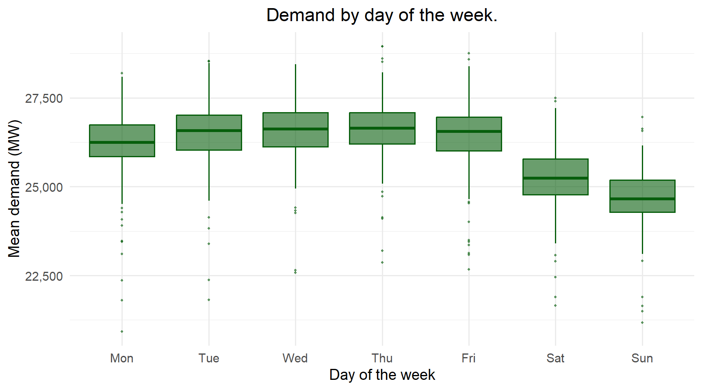
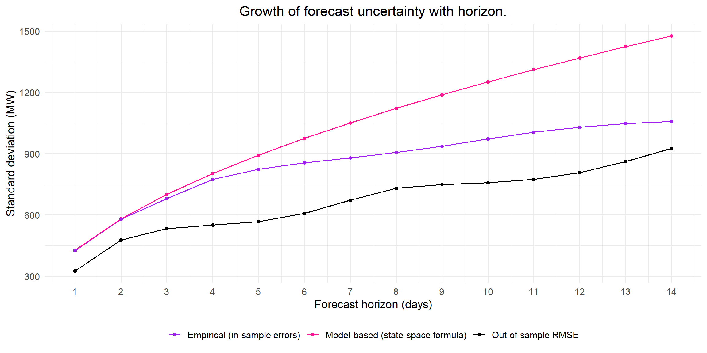
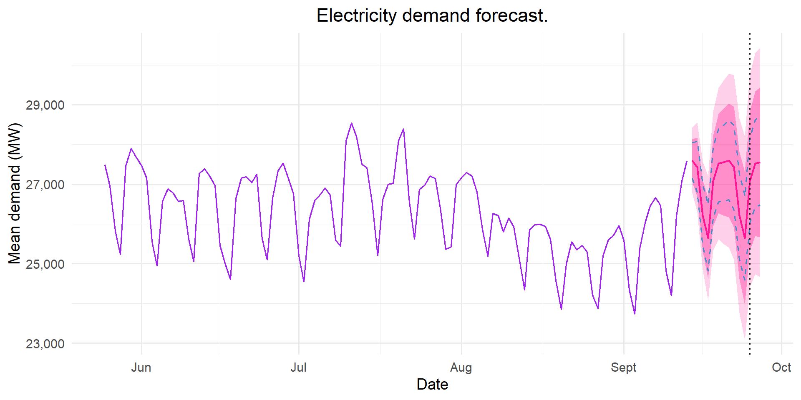

Reliable electricity supply is central to a country’s economy. Balancing supply against demand is a daily problem for the national grid. In South Africa, Eskom has to make daily decisions on which power stations to run, whether to use expensive diesel generators and whether load shedding is needed. These decisions depend on accurate forecasts of electricity demand. If demand is underestimated, Eskom may need expensive emergency generation or load shedding. If demand is overestimated, fuel and generating capacity are wasted.
Daily electricity demand has a strong weekly pattern with more electricity being used during the week, when industries and offices are open. An annual pattern is also present in the data with larger amounts of electricity being consumed during the winter months as well as a level that drifts with economic activity. Exponential smoothing models adapt to the level of the most recent data quickly and the Holt-Winters method handles seasonality present in the data (Hyndman & Athanasopoulos, 2021). Writing exponential smoothing models as an ETS state-space model gives a likelihood that can be used for estimation, model selection and prediction intervals (Hyndman et al., 2008).
This project uses exponential smoothing to forecast daily South African electricity demand 1 to 14 days ahead. An exponential smoothing model is selected and compared to the naive and seasonal naive benchmarks. The selected Holt-Winters model is implemented from first principles and verified against forecast::ets(). A rolling forecast origin is used to evaluate both point forecasts and prediction intervals. This project also tests whether removing the annual cycle improves forecasts, since a model with a weekly season cannot capture the underlying annual cycle.
Data
The data come from the Eskom Data Portal (Eskom, 2024). They are hourly system data. The file covers 1 April 2019 to 31 March 2024, but RSA Contracted Demand is only recorded up to 13 September 2023. The variable used is RSA Contracted Demand, measured in MW. It is the hourly average demand supplied by all generators contracted to Eskom. These include Eskom’s own power stations and the independent power producers. International exports are excluded. The series records the demand that was actually supplied, so it falls during load shedding. The data are aggregated system totals and contain no personal information. No consent, anonymisation or POPIA steps were therefore needed.
Data access instructions. The data file ESK6816.csv was provided by the course lecturer. It was originally sourced from the Eskom Data Portal (https://www.eskom.co.za/dataportal/). To reproduce the analysis, save the file as _data/ESK6816.csv in the same folder as this document. The same series can also be downloaded from the portal under the hourly system data for 1 April 2019 to 31 March 2024.
Show code
# Read in data:eskom_raw =read_csv("_data/ESK6816.csv",col_types =cols(.default =col_double(),`Date Time Hour Beginning`=col_character()))# Hourly demand:eskom_hourly = eskom_raw |>transmute(datetime =ymd_hm(`Date Time Hour Beginning`),demand =`RSA Contracted Demand`) |>arrange(datetime)# Daily mean demand:eskom_daily = eskom_hourly |>filter(!is.na(demand)) |>mutate(date =as_date(datetime)) |>group_by(date) |>summarise(hours =n(),demand =mean(demand),.groups ="drop") |>filter(hours ==24)# Hours with no demand value:n_na_hours =sum(is.na(eskom_hourly$demand))n_na_before =sum(is.na(eskom_hourly$demand) &as_date(eskom_hourly$datetime) <=max(eskom_daily$date))# Drop in demand at start of hard lockdown (April 2020 vs 1-14 March 2020):lockdown_drop =100* (1-mean(eskom_daily$demand[format(eskom_daily$date, "%Y-%m") =="2020-04"]) /mean(eskom_daily$demand[eskom_daily$date >=as.Date("2020-03-01") & eskom_daily$date <=as.Date("2020-03-14")]))# South African public holidays in the modelling period:sa_holidays =as.Date(c(# 2021"2021-01-01", "2021-03-22", "2021-04-02", "2021-04-05", "2021-04-27", "2021-05-01","2021-06-16", "2021-08-09", "2021-09-24", "2021-11-01", "2021-12-16", "2021-12-25","2021-12-27",# 2022"2022-01-01", "2022-03-21", "2022-04-15", "2022-04-18", "2022-04-27", "2022-05-02","2022-06-16", "2022-08-09", "2022-09-24", "2022-12-16", "2022-12-25", "2022-12-26","2022-12-27",# 2023"2023-01-02", "2023-03-21", "2023-04-07", "2023-04-10", "2023-04-27", "2023-05-01","2023-06-16", "2023-08-09", "2023-09-25"))
Daily demand is calculated as the average of the 24 hourly values for each day. The data cover 1627 complete days, from 1 April 2019 to 13 September 2023. There are 0 missing hourly values up to this date. The remaining 4,800 hours, from 14 September 2023 to 31 March 2024, have no demand value, so the series ends on 13 September 2023. Public holidays that fell on a Sunday and were observed on the Monday are included in the list of holidays.
The models are fitted to data from 1 March 2021 onwards, since this is when South Africa moved to lockdown alert level 1 (South African Government, 2021). Starting here excludes the lockdown period, when demand dropped sharply and the usual weekly pattern broke down (Figure 1). The structural break test (Figure 2) and its sensitivity check (Table 1) both support this start date. The training set covers 1 March 2021 to 19 July 2023 (871 days). The test set is the last 8 weeks, from 20 July 2023 to 13 September 2023 (56 days). The last 8 weeks of the training set are used as a validation window for modelling choices, so the test set is only used for the final evaluation.
Figure 1: Daily mean RSA contracted demand from April 2019 to September 2023. The dark band is the hard lockdown (alert levels 5 and 4, 27 March to 31 May 2020). The light band covers the remaining lockdown restrictions up to 28 February 2021. The dashed line marks the start of the modelling period.
Figure 1 shows that daily demand fluctuates around \(26\,000\) MW. There is a clear weekly and annual pattern. The hard lockdown in 2020 is the biggest disruption in the series. Average demand in April 2020 was approximately 24% lower than in the first two weeks of March 2020. Demand recovered slowly through 2020 but stayed below typical levels while Covid-19 restrictions were still in place. There is a sharp drop present in the series that corresponds to the period between Christmas and New Year, since many industries shut down over this time. There is no clear long-term trend in the data. After the lockdown period, demand stays at a similar level from 2021 to 2023. This can be explained by slow economic growth and ongoing load shedding, which kept demand from rising over this period.
The lockdown changed both the level of demand and the weekly pattern. Including this period would distort the model estimates, so the models are only fitted to data after the lockdown. A structural break test is used to decide when the lockdown period ends.
Structural break over the lockdown
To identify when the lockdown period ends, the Bai-Perron structural break test is applied to weekly average demand from April 2019 to September 2023 (Bai & Perron, 2003; Zeileis et al., 2002). Weekly averages are used so that the weekly pattern does not affect the results. The test fits a regression model to the series and estimates the dates at which its coefficients change. The regression includes Fourier terms to model the annual cycle in demand as well as an indicator variable for the Christmas and New Year weeks to account for the sharp drop in demand over the holidays. The number of breaks is selected using BIC and each segment is required to be at least 48 weeks long, which ensures that every segment contains close to a full annual cycle and one Christmas period. This prevents the seasonal drop from being interpreted as a structural break.
Show code
# Weekly mean demand:eskom_weekly = eskom_daily |>mutate(week =floor_date(date, "week", week_start =1)) |>group_by(week) |>summarise(days =n(), demand =mean(demand), .groups ="drop") |>filter(days ==7)# Annual Fourier terms at middle of each week:angle_w =2*pi*yday(eskom_weekly$week+3)/365.25# Christmas and New Year indicator:is_xmas =function(d) (month(d)==12&day(d)>=22)|(month(d)==1&day(d)<=3)weekly_df = eskom_weekly |>mutate(sin1 =sin(angle_w),cos1 =cos(angle_w),sin2 =sin(2*angle_w),cos2 =cos(2*angle_w),xmas =as.numeric(map_lgl(week,~any(is_xmas(.x+0:6)))))bp_formula = demand~sin1+cos1+sin2+cos2+xmas# Bai-Perron breakpoints:bp =breakpoints(bp_formula, data = weekly_df, h =48)n_breaks =length(bp$breakpoints)break_dates = weekly_df$week[bp$breakpoints]# supF test for a single break at an unknown date:fs =Fstats(bp_formula, data = weekly_df, from =48)sup_test =sctest(fs, type ="supF")# Sensitivity of break dates to minimum segment length h (weeks):bp_sens =map(c(26, 36, 48, 52), function(hh) { b =breakpoints(bp_formula, data = weekly_df, h = hh) bd =if (all(is.na(b$breakpoints))) as.Date(NA) else weekly_df$week[b$breakpoints]tibble(h = hh,Breaks =sum(!is.na(b$breakpoints)),`First break`=format(bd[1], "%e %B %Y"),`Last break`=format(bd[length(bd)], "%e %B %Y"),last_break = bd[length(bd)])}) |>list_rbind()weekly_df = weekly_df |>mutate(fitted =fitted(bp, breaks = n_breaks))
Show code
ggplot(data = weekly_df, mapping =aes(x = week)) +annotate("rect", xmin =as.Date("2020-03-27"), xmax =as.Date("2020-05-31"),ymin =-Inf, ymax =Inf, fill ="grey85") +geom_line(aes(y = demand), col ="grey50") +geom_line(aes(y = fitted), col = col_main, linewidth =1) +geom_vline(xintercept = break_dates, linetype ="dashed") +scale_y_continuous(labels = scales::comma) +labs(title ="Structural breaks in weekly demand.", x ="Week", y ="Mean demand (MW)")
Figure 2: Weekly mean demand (grey) and the fitted segmented regression with annual Fourier terms and a Christmas indicator (purple). Dashed lines mark the estimated break dates. The shaded area is the hard lockdown.
The supF test rejects the null hypothesis of no structural break (p-value = 2.3^{-8}) and BIC selects 2 breaks (Figure 2). The weekly residuals are autocorrelated, so this p-value is only approximate. The first segment ends in the week of 16 March 2020, just before the hard lockdown began. The second segment ends in the week of 15 February 2021. This is close to the end of the adjusted alert level 3 restrictions and the move to alert level 1 on 1 March 2021. The middle segment therefore covers the full lockdown, the slow recovery and the second wave restrictions over December 2020 and January 2021. After the second break, demand returns to a seasonal pattern similar to the one before the lockdown. The winter peaks are slightly lower, which may be an effect of load shedding.
The lockdown segment is roughly 48 weeks long, which is the same as the minimum segment length. The second break could therefore be set by the choice of \(h\) rather than by the data. To check this, the test is repeated with \(h\) = 26, 36 and 52 weeks (Table 1).
Show code
bp_sens |>select(-last_break) |>kable()
Table 1: Number of breaks selected by BIC and the estimated break weeks for different minimum segment lengths h (in weeks).
h
Breaks
First break
Last break
26
2
16 March 2020
14 September 2020
36
2
23 March 2020
14 December 2020
48
2
16 March 2020
15 February 2021
52
2
23 March 2020
22 March 2021
The first break stays in March 2020 for every value of \(h\). The second break moves between the weeks of 14 September 2020 and 22 March 2021. With shorter segments, demand seems to return to normal in early January 2021, while the adjusted alert level 3 restrictions were still in place. The end of the disruption is therefore uncertain by two to three months. Starting on 1 March 2021 falls inside this range. It excludes all the weeks under alert level 3, at the cost of approximately 8 weeks of data compared with a January start. It is also a known policy date, so it does not depend on the tuning of the test.
Show code
ggplot(data = model_df, mapping =aes(x = weekday, y = demand)) +geom_boxplot(fill = col_green, colour = col_green, alpha =0.6, outlier.size =0.8) +scale_y_continuous(labels = scales::comma) +labs(title ="Demand by day of the week.",x ="Day of the week",y ="Mean demand (MW)")

Figure 3: Distribution of daily demand by day of the week (1 March 2021 to 13 September 2023).
Figure 3 shows the weekly pattern in electricity demand. Demand is highest from Tuesday to Thursday, with very similar levels across these three days. It is slightly lower on Mondays and Fridays and drops considerably over the weekend, with Sunday having the lowest demand.
The interquartile ranges for electricity demand are of a similar width for every day of the week. Under a multiplicative seasonal pattern, the spread of observations would increase with the level of demand, so the weekday ranges would be noticeably wider than the weekend ranges. This is not observed, which suggests an additive weekly seasonal component. There are several weekday observations with very low demand, which could be due to public holidays.
Show code
ggAcf(y_train, lag.max =35) +labs(title ="Autocorrelation of daily demand.", x ="Lag (days)", y ="ACF")# ACF values for text:acf_vals =as.numeric(acf(as.numeric(y_train), lag.max =35, plot =FALSE)$acf)acf_at =function(k) round(acf_vals[k +1], 2)
Figure 4: ACF of daily demand in the training set.
The ACF in Figure 4 shows strong weekly seasonality, with clear peaks at lags 7, 14, 21, 28 and 35. The lags on either side of these peaks are also large, while the autocorrelations between the peaks fall close to zero. Demand is highly correlated with the demand of the previous day (lag 1, ACF \(\approx\) 0.75) and almost as strongly correlated with demand one week earlier (lag 7, ACF \(\approx\) 0.73). Thus, demand on a given day is strongly related to demand on the previous day as well as demand on the same day of the previous week. The weekly peaks decrease gradually, from approximately 0.73 at lag 7 to 0.42 at lag 35. This shows that the level of demand is highly persistent. Both features present in the ACF plot suggest that a suitable model needs a weekly seasonal component as well as a level that carries over from one day to the next.
Figure 5: MSTL decomposition of daily demand in the training set into a trend, a weekly seasonal component (period 7), an annual seasonal component (period 365.25) and a remainder.
Figure 5 shows the MSTL decomposition of daily demand into a trend, a weekly seasonal component, an annual seasonal component and a remainder. The trend falls through 2021 into early 2022, rises until late 2022 and then falls again through 2023. Overall it declines slightly, from approximately 26,100 MW to 25,900 MW. This is a change of only 0.9% of average demand over about two and a half years, which is very small compared with the weekly and annual patterns. A trend component therefore does not seem necessary. This is tested formally with the damped trend model in Table 3. The weekly component follows a regular pattern, from approximately +800 MW on weekdays to approximately −1,600 MW on Sundays. Its size is fairly constant, although it narrows slightly over the 2021/22 summer. The annual component drops by about 4,000 MW over Christmas and New Year and rises during the winter months. It also dips each April around Easter. The remainder is mostly small. Its largest spikes fall around Easter and other public holidays (Table 6).
Holt-Winters exponential smoothing can only model one seasonal period. Thus, the weekly pattern is modelled as the seasonal component and the annual cycle is left to the level. This decision is assessed in the extension at the end of the model evaluation.
Model fitting
Exponential smoothing models
The candidate models are written in state-space form (Hyndman et al., 2008; Department of Statistical Sciences, 2026) and are shown in Table 2.
Table 2: Candidate exponential smoothing models with weekly seasonal period \(m = 7\) and \(\varepsilon_t \sim N(0, \sigma^2)\). For the additive models \(y_t = \mu_t + \varepsilon_t\), and for ETS(M,N,M) \(y_t = \mu_t(1 + \varepsilon_t)\).
Simple exponential smoothing ignores the weekly pattern and is included as a reference. ETS(A,N,A) has an additive weekly season and no trend, which matches the very small trend in Figure 5. ETS(A,Ad,A) adds a damped trend, so it can follow the slight decline in the level, if this matters. ETS(M,N,M) lets the weekly pattern grow with the level. Figure 3 suggests this is not needed. All parameters and initial states are estimated by maximum likelihood. The models are compared with each other using AICc and with the naive and seasonal naive benchmarks out of sample.
Fitting with ets()
Show code
# Fit candidate models to training set:fit_ann =ets(y_train, model ="ANN")fit_ana =ets(y_train, model ="ANA")fit_aada =ets(y_train, model ="AAA", damped =TRUE)fit_mnm =ets(y_train, model ="MNM")# Automatic selection by AICc:fit_auto =ets(y_train)ets_list =list("ETS(A,N,N)"= fit_ann,"ETS(A,N,A)"= fit_ana,"ETS(A,Ad,A)"= fit_aada,"ETS(M,N,M)"= fit_mnm)# Function to extract smoothing parameter:get_par =function(fit, name) {if (name %in%names(fit$par)) unname(fit$par[name]) elseNA_real_}
Table 3: Training-set comparison of the candidate exponential smoothing models, in increasing order of AICc. The number of parameters includes the initial states.
Model
Parameters
AICc
BIC
\(\alpha\)
\(\beta\)
\(\gamma\)
\(\phi\)
Training RMSE
ETS(A,N,A)
9
16463.2
16510.7
0.9154
-
1e-04
-
426.0
ETS(A,Ad,A)
12
16470.7
16532.3
0.9125
1e-04
1e-04
0.952
426.3
ETS(M,N,M)
9
16490.2
16537.6
0.8865
-
1e-04
-
421.8
ETS(A,N,N)
2
17683.4
17697.7
0.9997
-
-
-
865.2
Table 3 shows that all three models with a weekly seasonal component have a much lower AICc than simple exponential smoothing, ETS(A,N,N), and about half its training RMSE. The weekly pattern is therefore the most important feature of the series. ETS(A,N,A) has a lower AICc than ETS(M,N,M), which agrees with the additive weekly pattern in Figure 3. The damped trend has minimal effect. Its \(\hat\beta\) is essentially zero, so the slope is hardly updated over the training period. ETS(A,Ad,A) also has a higher AICc than ETS(A,N,A), so any improvement in fit does not justify the extra parameters. The slight decline in Figure 5 is therefore too small to need a trend term. Automatic model selection in ets() (Hyndman & Khandakar, 2008) also selects ETS(A,N,A).
ETS(A,N,A), additive Holt-Winters without a trend, is selected as the best model, with \(\hat{\alpha} =\) 0.915 and \(\hat{\gamma} =\) 10^{-4}. The large \(\hat{\alpha}\) means the level reacts quickly to new data. About 92% of each one-step-ahead forecast error is carried into the level. This matches the high persistence in the ACF (Figure 4) and lets the level follow the slow annual cycle in demand. The very small \(\hat{\gamma}\) means the weekly pattern hardly changes over the training period.
Show code
# Last row of states holds s1 (most recent seasonal state) to s7:last_states =tail(fit_ana$states, 1)seas_effect =as.numeric(last_states[1, paste0("s", 1:7)])seas_dates = train_end -0:6weekly_profile =tibble(weekday =wday(seas_dates, label =TRUE, week_start =1),effect = seas_effect)ggplot(data = weekly_profile, mapping =aes(x = weekday, y = effect)) +geom_col(fill = col_accent, alpha =0.8) +geom_hline(yintercept =0) +labs(title ="Weekly seasonal effects.", x ="Day of the week", y ="Effect (MW)")# Weekday effects for text:eff =function(day) weekly_profile$effect[as.character(weekly_profile$weekday) == day]tue_thu_rng =range(sapply(c("Tue", "Wed", "Thu"), eff))
Figure 6: Estimated weekly seasonal effects of ETS(A,N,A) at the end of the training set.
Figure 6 shows the weekly seasonal effects estimated by ETS(A,N,A), measured relative to the level. Demand is approximately 500 to 600 MW above the level from Tuesday to Thursday and slightly lower on Friday. Over the weekend demand falls well below the level, by approximately 800 MW on Saturday and 1,300 MW on Sunday. Monday is close to the level, sitting between the low weekend demand and the higher demand later in the week.
Holt-Winters from first principles
ETS(A,N,A) was also implemented from first principles. The filter applies the error-correction equations in Table 2 recursively, one day at a time. Given the parameter vector \(\theta = (\alpha, \gamma, \ell_0, s_{-6}, \dots, s_{-1})\), it returns the one-step-ahead errors \(\varepsilon_t = y_t - \hat{y}_{t|t-1}\). Under Gaussian additive errors the log-likelihood is
Replacing \(\sigma^2\) with its maximum likelihood estimate \(\hat\sigma^2 = \text{SSE}/n\) gives the profile log-likelihood \(\log L(\theta) = -\frac{n}{2}\log(\text{SSE}) + \text{constant}\). Maximising the likelihood is therefore equivalent to minimising the SSE, which is done numerically with BFGS in optim(). The smoothing parameters are reparameterised as \(\alpha = \text{logit}^{-1}(\theta_1)\) and \(\gamma = (1-\alpha)\,\text{logit}^{-1}(\theta_2)\). This keeps the optimisation unconstrained while enforcing \(0 < \alpha < 1\) and \(0 < \gamma < 1 - \alpha\), the same region as ets(). The initial seasonal states are constrained to sum to zero, so that the seasonal effects are identifiable separately from the level. Only six are estimated, and the seventh is \(s_0 = -\sum_{j=1}^{6} s_{-j}\). In total, nine parameters are estimated, plus \(\sigma^2\).
Show code
# ------------------------------------------------------------------------------# STEP 1: Convert optimiser's unconstrained numbers into valid model parameters# alpha: (0,1)# gamma: (0,1-alpha)# l0: initial level# s_free: first 6 days # s0: last day hw_unpack =function(theta, m =7) { alpha =plogis(theta[1]) gamma = (1- alpha) *plogis(theta[2]) l0 = theta[3] s_free = theta[4:(m +2)] s0 =c(s_free, -sum(s_free)) list(alpha = alpha, gamma = gamma, l0 = l0, s0 = s0)}# ------------------------------------------------------------------------------# STEP 2: Run ETS(A,N,A) model through data one day at a time# n: no. days# l: start level at initial val# s: queue of last seven seasonal states# fitted: vector to store forecasts, errors, levels# s_hist: matrix to store seven seasonal states after each dayhw_filter =function(p, y, m =7) { n =length(y) l = p$l0 s = p$s0 fitted = e = l_hist =numeric(n) s_hist =matrix(NA, n, m)# For loop to implement ETS(A,N,A) model:for (t in1:n) {# 1: Forecast today = current level + seasonal effect fitted[t] = l + s[1] # one-step-ahead forecast: l_{t-1} + s_{t-m}# 2: Forecast error: e[t] = y[t] - fitted[t] # one-step-ahead error# 3: Update level: l = l + p$alpha * e[t] # level equation# 4: Update weekday's effect: s =c(s[-1], s[1] + p$gamma * e[t]) # seasonal equation# 5: Store the updated states: l_hist[t] = l # level after observing y_t s_hist[t, ] = s # seasonal states after observing y_t }# Return:list(fitted = fitted, e = e, l_hist = l_hist, s_hist = s_hist)}# ------------------------------------------------------------------------------# STEP 3: Score a set of parameters:# Objective function to minimisehw_sse =function(theta, y, m =7) {sum(hw_filter(hw_unpack(theta, m), y, m)$e^2)}# ------------------------------------------------------------------------------# STEP 4: Forecast# j: forecast horizon# fc: point forecast # c_i: forecast variance # var_h: variance at each horizonhw_forecast =function(l, s, h, alpha, gamma, sigma2, m =7) { j =1:h fc = l + s[(j -1) %% m +1] c_i = alpha + gamma * ((1:max(h -1, 1)) %% m ==0) var_h = sigma2 * (1+c(0, cumsum(c_i^2)))[1:h]# Prediction intervals:tibble(h = j,mean = fc,sd =sqrt(var_h),lo80 = fc -qnorm(0.90) *sqrt(var_h),hi80 = fc +qnorm(0.90) *sqrt(var_h),lo95 = fc -qnorm(0.975) *sqrt(var_h),hi95 = fc +qnorm(0.975) *sqrt(var_h))}
Show code
# Convert training series from ts object to numeric vector:y_train_num =as.numeric(y_train)# Starting values for the optimiser: first_week = y_train_num[1:7]theta_start =c(qlogis(0.5), qlogis(0.05), mean(first_week), (first_week -mean(first_week))[1:6])# Estimate parameters:own_fit =optim(par = theta_start, fn = hw_sse, y = y_train_num, method ="BFGS", control =list(maxit =2000, reltol =1e-12,parscale =c(1, 1, 100, rep(100, 6))))# Convert best raw values into alpha, gamma and initial states:own_par =hw_unpack(own_fit$par)# Run the filter with best parameters:own_filt =hw_filter(own_par, y_train_num)# Likelihood, AIC and residual variance:k_own =9sse_own = own_fit$value loglik_own =-0.5* n_train *log(sse_own) aic_own =-2* loglik_own +2* (k_own +1) sigma2_own = sse_own / (n_train - k_own) # Check:ets_init = fit_ana$states[1, ] ets_par =list(alpha =unname(fit_ana$par["alpha"]),gamma =unname(fit_ana$par["gamma"]),l0 =unname(ets_init["l"]),s0 =rev(unname(ets_init[paste0("s", 1:7)])))own_at_ets =hw_filter(ets_par, y_train_num)max_resid_diff =max(abs(own_at_ets$e -as.numeric(residuals(fit_ana))))# Forecasts:own_fc_train =hw_forecast(l =tail(own_filt$l_hist, 1), s = own_filt$s_hist[n_train, ],h = H, alpha = own_par$alpha, gamma = own_par$gamma,sigma2 = sigma2_own)ets_fc_train =forecast(fit_ana, h = H, level =c(80, 95))
Table 4: ETS(A,N,A) estimated from first principles and with forecast::ets() on the training set.
Quantity
First principles
ets()
\(\alpha\)
1.0000
0.9154
\(\gamma\)
0.0000
0.0001
Log-likelihood
-8,219.7095
-8,221.4939
AIC
16,459.4191
16,462.9878
\(\sigma\) (MW)
427.2918
428.1680
SSE
157,382,469.8790
158,028,626.2606
Forecast \(h = 1\) (MW)
27,041.9548
27,030.6164
Forecast \(h = 7\) (MW)
27,021.7231
27,023.9661
Upper 95% limit \(h = 14\) (MW)
30,155.2732
29,918.0516
To check the implementation, the filter was run with the parameters estimated by ets(). The resulting errors match the ets() residuals to within 3.6^{-12} MW, confirming that the filter is correct. When the parameters are estimated independently, the first principles fit has a marginally lower SSE than ets() (Table 4). Its \(\hat\alpha\) reaches the upper boundary (\(\hat\alpha \approx\) 1), compared with \(\hat\alpha =\) 0.915 from ets(). The logit scale can only approach 1, so this is a boundary solution. Since the two SSEs are almost the same, we can assume that the likelihood surface is flat for \(\alpha\) between about 0.9 and 1. On such a flat surface, small differences in the optimiser and the starting values are enough to give different estimates. ets() uses Nelder-Mead with its own starting values, while my code uses BFGS. The point forecasts differ by at most 41.7 MW, which is negligible. The prediction intervals are slightly wider, since the forecast variance grows with \(\alpha\). With \(\hat\alpha \approx 1\), almost every forecast error is carried fully into the level.
Residual diagnostics
Show code
res_df =tibble(date = model_df$date[1:n_train],resid =as.numeric(residuals(fit_ana))) |>mutate(weekday =wday(date, label =TRUE, week_start =1),holiday = date %in% sa_holidays,after_holiday = (date -1) %in% sa_holidays,type =case_when(holiday ~"Public holiday", after_holiday ~"Day after a public holiday",TRUE~"Other day"))p_res =ggplot(data = res_df, mapping =aes(x = date, y = resid)) +geom_line(col ="grey60", linewidth =0.3) +geom_point(data =filter(res_df, type !="Other day"),mapping =aes(shape = type), col = col_accent, size =2) +labs(title ="One-step-ahead residuals.", x ="Date", y ="Residual (MW)", shape =NULL) +theme(legend.position ="bottom")p_acf =ggAcf(res_df$resid, lag.max =28) +labs(title ="ACF of residuals.", x ="Lag (days)", y ="ACF")p_qq =ggplot(data = res_df, mapping =aes(sample = resid)) +stat_qq(col = col_main, size =0.8) +stat_qq_line(col = col_accent) +labs(title ="Normal Q-Q plot.", x ="Theoretical quantiles", y ="Sample quantiles")p_res / (p_acf + p_qq)
Figure 7: Residual diagnostics for ETS(A,N,A) on the training set. Top: one-step-ahead residuals over time, with public holidays (and the day after a public holiday) in pink. Bottom: ACF of the residuals and a normal Q-Q plot.
Show code
# Ljung-Box test at 1, 2 and 4 weeks:lags =c(7, 14, 28)lb_tbl =tibble(Lag = lags,Statistic =sapply(lags, function(L) Box.test(res_df$resid, lag = L, type ="Ljung-Box")$statistic),`p-value`=sapply(lags, function(L) Box.test(res_df$resid, lag = L, type ="Ljung-Box")$p.value))# Excess kurtosis of residuals:excess_kurt =mean((res_df$resid -mean(res_df$resid))^4) /sd(res_df$resid)^4-3lb_tbl |>mutate(`p-value`=format.pval(`p-value`, eps =0.001, digits =3)) |>kable(digits =2)
Table 5: Ljung-Box tests on the ETS(A,N,A) one-step-ahead residuals at lags 7, 14 and 28.
Table 6: The ten largest one-step-ahead residuals (in absolute value) of ETS(A,N,A) on the training set.
Date
Weekday
Residual (MW)
Type
2021-04-02
Fri
-1826
Public holiday
2021-04-06
Tue
1828
Day after a public holiday
2021-08-10
Tue
1728
Day after a public holiday
2021-11-01
Mon
-1417
Public holiday
2022-04-15
Fri
-1905
Public holiday
2022-04-16
Sat
1926
Day after a public holiday
2022-12-26
Mon
-1725
Public holiday
2023-03-22
Wed
1484
Day after a public holiday
2023-04-07
Fri
-2025
Public holiday
2023-04-11
Tue
2240
Day after a public holiday
The residuals in Figure 7 fluctuate around zero with a fairly constant spread but they are not white noise. The Ljung-Box tests reject the null hypothesis of no autocorrelation at all three lags (Table 5) and the ACF shows significant negative autocorrelation at lags 2 and 4. The residuals are heavy-tailed (excess kurtosis = 3.74), with points in both tails of the Q-Q plot lying well away from the line.
Most of this behaviour is explained by public holidays. In Figure 7, public holidays produce large negative residuals and the days that follow produce large positive residuals. Of the 10 largest residuals, 10 fall on one of these days (Table 6). On a public holiday demand drops to a level similar to a Sunday but the model forecasts a normal weekday. The large value of \(\hat\alpha\) then pulls the level down, so the following day is under-forecast. This pattern of a negative residual followed by a positive one contributes to the negative autocorrelation at short lags. Exponential smoothing cannot anticipate holidays, so this is a limitation of the model rather than a problem with the fit.
Model evaluation
Rolling-origin evaluation
A single forecast from the end of the training set only tests the models from one forecast origin. Thus, the models are evaluated using a rolling forecast origin across the test set. On each day of the test set, every model forecasts demand 1 to 14 days ahead using only the data observed up to that day. The parameters remain fixed at their training estimates, while the level and seasonal states are updated as each new observation becomes available. This results in 56 forecast origins and several hundred forecast errors for each model.
Show code
# Function for rolling-origin forecasts over test set:roll_forecast =function(fc_fun, y, n_train, H) { n =length(y) out =vector("list", n - n_train)for (i in n_train:(n -1)) { fc =fc_fun(subset(y, end = i)) hh =1:min(H, n - i) out[[i - n_train +1]] =tibble(origin = i,h = hh,actual =as.numeric(y[i + hh]),mean =as.numeric(fc$mean[hh]),lo80 =as.numeric(fc$lower[hh, 1]),hi80 =as.numeric(fc$upper[hh, 1]),lo95 =as.numeric(fc$lower[hh, 2]),hi95 =as.numeric(fc$upper[hh, 2])) }bind_rows(out)}# Forecast functions:fc_funs =list("Naive"=function(x) naive(x, h = H, level =c(80, 95)),"Seasonal naive"=function(x) snaive(x, h = H, level =c(80, 95)),"ETS(A,N,N)"=function(x) forecast(ets(x, model = fit_ann, use.initial.values =TRUE),h = H, level =c(80, 95)),"ETS(A,N,A)"=function(x) forecast(ets(x, model = fit_ana, use.initial.values =TRUE),h = H, level =c(80, 95)),"ETS(A,Ad,A)"=function(x) forecast(ets(x, model = fit_aada, use.initial.values =TRUE),h = H, level =c(80, 95)),"ETS(M,N,M)"=function(x) forecast(ets(x, model = fit_mnm, use.initial.values =TRUE),h = H, level =c(80, 95)))roll_pkg =imap(fc_funs, function(f, name) {roll_forecast(f, y_all, n_train, H) |>mutate(Model = name)}) |>list_rbind()# Own code: filter whole series with training estimates,# then forecast from stored states at each origin:own_all =hw_filter(own_par, as.numeric(y_all))roll_own =map(n_train:(n_all -1), function(i) { hh =1:min(H, n_all - i)hw_forecast(l = own_all$l_hist[i], s = own_all$s_hist[i, ], h =max(hh),alpha = own_par$alpha, gamma = own_par$gamma, sigma2 = sigma2_own) |>mutate(origin = i, actual =as.numeric(y_all[i + hh]))}) |>list_rbind() |>mutate(Model ="ETS(A,N,A), own code") |>select(origin, h, actual, mean, lo80, hi80, lo95, hi95, Model)roll_all =bind_rows(roll_pkg, roll_own) |>mutate(error = actual - mean)
Figure 8: Out-of-sample RMSE by forecast horizon for the benchmarks and the exponential smoothing models.
Table 7 shows that the four Holt-Winters models (the three ets() models with a weekly season and my own implementation) give the most accurate forecasts, with very similar performance. ETS(A,N,A) has an RMSE of 674 MW (MAPE = 2.05%). This compares with 786 MW for the seasonal naive benchmark and 1185 MW for the naive benchmark. Simple exponential smoothing performs the same as the naive method. With \(\hat\alpha\) close to 1 and no seasonal component, its forecast is essentially the last observed value. My own implementation performs almost identically to ets(), so it also gives reliable forecasts out of sample.
Figure 8 shows how accuracy changes with the forecast horizon. At \(h = 1\), the Holt-Winters models have about half the error of the seasonal naive method. They use both the most recent level and the weekly pattern, while the seasonal naive method only uses the same day of the previous week. This advantage shrinks as the horizon grows. At \(h = 7\) and \(h = 14\) all the seasonal models perform about the same as the seasonal naive method. With \(\hat\alpha \approx 1\) and \(\hat\gamma \approx 0\), the 7-step-ahead forecast is almost exactly the value observed on the same day of the previous week. For my own implementation, where \(\hat\alpha \approx 1\), the two forecasts are practically identical. The RMSE of the naive method rises and falls in a 7-day cycle. Its forecasts are accurate when the forecast day is the same weekday as the forecast origin and much less accurate on other days.
The results in Table 7 come from a single 8-week test period. The Diebold-Mariano test is therefore used to check whether ETS(A,N,A) is significantly more accurate than the seasonal naive benchmark (Diebold & Mariano, 1995). It compares the squared errors of the two models at each horizon. It also allows for the correlation between \(h\)-step errors from consecutive origins, since their forecast periods overlap.
Table 8: Diebold-Mariano tests of ETS(A,N,A) against the seasonal naive benchmark (squared-error loss, two-sided). An RMSE ratio below 1 means ETS(A,N,A) is more accurate.
h
Origins
RMSE ratio
p-value
1
56
0.5
<0.001
7
50
1.0
0.80
14
43
1.0
0.86
At \(h = 1\), ETS(A,N,A) is significantly more accurate than the seasonal naive method (RMSE ratio 0.5, p-value <0.001). At \(h = 7\) and \(h = 14\) the RMSE ratios are close to 1 (p-values 0.8 and 0.86). There is no evidence that ETS(A,N,A) beats the benchmark one or two weeks ahead. The test has little power at these horizons, with only 43 origins at \(h = 14\). However, low power is not the main reason. With \(\hat\alpha \approx 1\) and \(\hat\gamma \approx 0\), the two methods give almost the same forecasts a week or more ahead, so there is little difference to detect. The main value of the model is therefore at short horizons.
Are the prediction intervals reliable?
ETS models give prediction intervals from their state-space form. For ETS(A,N,A), the variance of the \(h\)-step-ahead forecast error is
(Hyndman et al., 2008), and the \(100(1-a)\%\) interval is \(\hat y_{t+h|t} \pm z_{1-a/2}\,\sigma_h\). These intervals assume that the model is correct, that the errors are independent and normal and that the parameters are known. The residual diagnostics show that these assumptions do not fully hold, so the coverage of the intervals is checked on the test set.
As an alternative, empirical intervals are built from first principles. The filter produces 1- to 14-step-ahead forecasts from every origin in the training set after the first four weeks. At each horizon, the 2.5%, 10%, 90% and 97.5% quantiles of these forecast errors, \(q_p(h)\), are added to the point forecast. These intervals make no assumption about normality or about how the variance grows with \(h\).
Show code
# In-sample h-step-ahead errors from own filter:insample_err =map(28:(n_train -1), function(i) { hh =1:min(H, n_train - i) fc = own_filt$l_hist[i] + own_filt$s_hist[i, (hh -1) %%7+1]tibble(h = hh, error = y_train_num[i + hh] - fc)}) |>list_rbind()emp_q = insample_err |>group_by(h) |>summarise(q025 =quantile(error, 0.025), q10 =quantile(error, 0.10),q90 =quantile(error, 0.90), q975 =quantile(error, 0.975),sd_insample =sd(error),.groups ="drop")# Empirical intervals around own point forecasts in test set:roll_emp = roll_own |>left_join(emp_q, by ="h") |>mutate(lo80 = mean + q10, hi80 = mean + q90,lo95 = mean + q025, hi95 = mean + q975,Model ="ETS(A,N,A), empirical intervals",error = actual - mean) |>select(names(roll_all))
Table 9: Empirical coverage of the 80% and 95% prediction intervals over all forecast origins and horizons in the test set, and the mean interval width.
Model
Coverage 80%
Coverage 95%
Mean width 80%
Mean width 95%
ETS(A,N,A)
94.2
99.6
2597.8
3973.0
ETS(A,N,A), empirical intervals
82.5
99.4
1821.0
3660.4
ETS(A,N,A), own code
96.1
99.6
2790.9
4268.4
Seasonal naive
94.9
99.0
2686.0
4107.9
Show code
# Note: states do not affect variance, so last training states are reused# Model-based SD using ets() estimates:ets_sd =hw_forecast(l =tail(own_filt$l_hist, 1), s = own_filt$s_hist[n_train, ], h = H,alpha =unname(fit_ana$par["alpha"]), gamma =unname(fit_ana$par["gamma"]),sigma2 = fit_ana$sigma2)$sdsd_df =bind_rows(tibble(h =1:H, value = ets_sd, Source ="Model-based (state-space formula)"),tibble(h = emp_q$h, value = emp_q$sd_insample, Source ="Empirical (in-sample errors)"), rmse_h |>filter(Model =="ETS(A,N,A)") |>transmute(h, value = RMSE, Source ="Out-of-sample RMSE"))ggplot(data = sd_df, mapping =aes(x = h, y = value, colour = Source)) +geom_line() +geom_point(size =1.5) +scale_colour_manual(values =c("Model-based (state-space formula)"= col_accent,"Empirical (in-sample errors)"= col_main,"Out-of-sample RMSE"="black")) +scale_x_continuous(breaks =1:H) +labs(title ="Growth of forecast uncertainty with horizon.", x ="Forecast horizon (days)",y ="Standard deviation (MW)", colour =NULL) +theme(legend.position ="bottom")

Figure 9: Standard deviation of the h-step-ahead forecast error: implied by the ETS(A,N,A) state-space model (pink), estimated from in-sample forecast errors (purple), and the out-of-sample RMSE in the test set (black).
The model-based intervals are too wide (Table 9). The 80% intervals cover 94% of the test observations and the 95% intervals cover 100%. With \(\hat\alpha\) close to 1, the model assumes that every error shifts the level permanently, so its forecast variance grows almost like that of a random walk. Figure 9 shows that the actual forecast errors grow much more slowly. Public holidays also inflate \(\hat\sigma^2\). The training set contains many holidays, while the test set contains only one.
The empirical intervals are narrower. Their 80% coverage is 83%, which is close to the nominal level. Their 95% intervals cover 99% and are still too wide. These limits are set by the largest in-sample errors, which occur mainly on public holidays. In principle, the empirical errors should be slightly optimistic, since they come from the same data used to estimate the parameters. Here the holiday effect clearly outweighs this. The empirical intervals are therefore a simple improvement at the 80% level.
Extension: removing the annual cycle
ETS allows only one seasonal period, so the level has to follow the annual cycle in Figure 5. The level only reacts after demand has changed, so forecasts at longer horizons cannot anticipate the seasonal rise into winter or the fall into spring. To test whether this matters, the annual cycle is removed before smoothing. Training demand is regressed on day-of-week indicators and three pairs of annual Fourier terms,
where \(\text{doy}_t\) is the day of the year of day \(t\) (1 to 366), and \(D_{d,t}\) equals 1 if day \(t\) falls on weekday \(d\) and 0 otherwise, with Monday as the baseline.
The day-of-week terms stop the weekly pattern from distorting the annual terms. Only the fitted Fourier part is subtracted from the series. ETS(A,N,A) is fitted to the adjusted data and rolled forward as before, and the annual component is added back to the forecasts.
Whether to use the adjustment is a modelling choice, so it is made on the validation window (25 May to 19 July 2023), with all models re-estimated on the data before it. The test set results are reported afterwards as a check.
Show code
# Function to compute Fourier terms for annual cycle:fourier_annual =function(dates, K =3) { angle =2* pi *yday(dates) /365.25 X =do.call(cbind, lapply(1:K, function(k) cbind(sin(k * angle), cos(k * angle))))colnames(X) =paste0(rep(c("sin", "cos"), K), rep(1:K, each =2)) X}X_all =fourier_annual(model_df$date)# Regression on training set (Fourier terms + day of week):annual_df =bind_cols(model_df |>select(demand, weekday), as_tibble(X_all))annual_fit =lm(demand ~ . , data = annual_df[1:n_train, ] |>mutate(weekday =factor(weekday, ordered =FALSE)))# Annual component for every date (Fourier part only):annual_all =as.numeric(X_all %*%coef(annual_fit)[colnames(X_all)])# Adjusted series and ETS(A,N,A) on adjusted training data:y_adj_all =ts(as.numeric(y_all) - annual_all, frequency =7)fit_adj =ets(subset(y_adj_all, end = n_train), model ="ANA")roll_adj =roll_forecast(function(x) forecast(ets(x, model = fit_adj, use.initial.values =TRUE),h = H, level =c(80, 95)), y_adj_all, n_train, H) |>mutate(add = annual_all[origin + h], # annual component on forecast dateactual = actual + add,mean = mean + add,lo80 = lo80 + add, hi80 = hi80 + add,lo95 = lo95 + add, hi95 = hi95 + add,Model ="Annual adjustment + ETS(A,N,A)",error = actual - mean) |>select(names(roll_all))# ------------------------------------------------------------------------------# Validation window: last n_test days of training set:n_fit_v = n_train - n_testy_train_t =subset(y_all, end = n_train)fit_ana_v =ets(subset(y_all, end = n_fit_v), model ="ANA")roll_v_ana =roll_forecast(function(x) forecast(ets(x, model = fit_ana_v, use.initial.values =TRUE),h = H, level =c(80, 95)), y_train_t, n_fit_v, H) |>mutate(Model ="ETS(A,N,A)", error = actual - mean)annual_fit_v =lm(demand ~ . , data = annual_df[1:n_fit_v, ] |>mutate(weekday =factor(weekday, ordered =FALSE)))annual_v =as.numeric(X_all %*%coef(annual_fit_v)[colnames(X_all)])y_adj_v =ts(as.numeric(y_all) - annual_v, frequency =7)fit_adj_v =ets(subset(y_adj_v, end = n_fit_v), model ="ANA")roll_v_adj =roll_forecast(function(x) forecast(ets(x, model = fit_adj_v, use.initial.values =TRUE),h = H, level =c(80, 95)),subset(y_adj_v, end = n_train), n_fit_v, H) |>mutate(add = annual_v[origin + h],actual = actual + add,mean = mean + add,lo80 = lo80 + add, hi80 = hi80 + add,lo95 = lo95 + add, hi95 = hi95 + add,Model ="Annual adjustment + ETS(A,N,A)",error = actual - mean) |>select(names(roll_all))# Function for accuracy and interval coverage for one period:annual_summary =function(df, period) { df |>group_by(Model) |>summarise(RMSE =sqrt(mean(error^2)),MAE =mean(abs(error)),`RMSE h = 1`=sqrt(mean(error[h ==1]^2)),`RMSE h = 14`=sqrt(mean(error[h ==14]^2)),`Coverage 80%`=100*mean(actual >= lo80 & actual <= hi80),`Coverage 95%`=100*mean(actual >= lo95 & actual <= hi95),.groups ="drop") |>mutate(Period = period, .before =1)}acc_annual =bind_rows(annual_summary(bind_rows(roll_v_ana, roll_v_adj), "Validation"),annual_summary(bind_rows(roll_all |>filter(Model =="ETS(A,N,A)"), roll_adj), "Test"))get_acc =function(period, model, col ="RMSE") { acc_annual[[col]][acc_annual$Period == period & acc_annual$Model == model]}m_ana ="ETS(A,N,A)"m_adj ="Annual adjustment + ETS(A,N,A)"# Mean June demand in each year:june_means = model_df |>filter(month(date) ==6) |>group_by(year =year(date)) |>summarise(demand =mean(demand), .groups ="drop")june_mean =function(yr) format(round(june_means$demand[june_means$year == yr], -2), big.mark =",")
Show code
ggplot(data =tibble(date = model_df$date, demand = model_df$demand,annual = annual_all +mean(model_df$demand)),mapping =aes(x = date)) +geom_line(aes(y = demand), col ="grey60", linewidth =0.3) +geom_line(aes(y = annual), col = col_accent, linewidth =1) +geom_vline(xintercept = train_end, linetype ="dashed") +scale_y_continuous(labels = scales::comma) +labs(title ="The annual cycle in demand.", x ="Date", y ="Mean demand (MW)")
Figure 10: Daily demand (grey) with the fitted annual component (pink), shifted to the mean demand. The dashed line marks the end of the training set.
Table 10: Accuracy and prediction interval coverage of ETS(A,N,A) with and without removing the annual cycle. Validation is the last 8 weeks of the training set (models re-estimated on the data before it). Test is the held-out test set.
Period
Model
RMSE
MAE
RMSE h = 1
RMSE h = 14
Coverage 80%
Coverage 95%
Validation
Annual adjustment + ETS(A,N,A)
788.0
617.5
404.8
828.6
89.3
97.4
Validation
ETS(A,N,A)
713.3
553.4
402.6
627.4
90.2
97.7
Test
Annual adjustment + ETS(A,N,A)
595.3
466.0
322.1
755.2
95.2
99.6
Test
ETS(A,N,A)
673.9
532.1
326.0
925.6
94.2
99.6
Figure 10 shows that the fitted annual component peaks in winter at about 1,300 MW above average demand and falls by a similar amount over the summer holidays.
The two periods in Table 10 give opposite answers. On the validation window, removing the annual cycle makes the forecasts worse. The RMSE rises from 713 MW to 788 MW, and at \(h = 14\) from 627 MW to 829 MW. On the test set it makes them better. The RMSE falls from 674 MW to 595 MW, and at \(h = 14\) from 926 MW to 755 MW. In both periods there is almost no difference at \(h = 1\), since the level has just been updated. The interval coverage is also almost unchanged, since \(\hat\alpha\) stays close to 1 (\(\hat\alpha =\) 0.912).
The difference comes from the winter of 2023. Mean June demand was 27,400 MW in 2021 and 27,200 MW in 2022, but only 26,500 MW in 2023. This is consistent with the heavy load shedding in 2023, which reduced the demand that could be supplied. The validation window covers the rise into winter, so the fixed annual cycle predicts a winter peak that did not happen. The test window covers the fall into spring. Here the annual cycle correctly predicts the decline, while the unadjusted model can only carry the current level forward.
The annual adjustment is therefore not used in the final model. Its benefit depends on whether each year repeats the earlier ones, and it only looks better on the test set. Choosing it there would mean selecting the model on the test data. A model with temperature and load shedding as predictors would capture the annual cycle better.
Forecasting
The final model is ETS(A,N,A) without the annual adjustment. It is re-estimated on the full modelling period (1 March 2021 to 13 September 2023) and used to forecast the next 14 days, the same horizon that was evaluated. Two sets of intervals are shown. The model-based intervals come from the state-space formula, but they were too wide on the test set (Table 9). The empirical 80% intervals had close to nominal coverage, so they are also given. They are built in the same way as before, from the 1- to 14-step-ahead in-sample errors, now over the full modelling period.
Show code
H_final = H# Re-estimate ETS(A,N,A) on all the data:fit_final =ets(y_all, model ="ANA")fc_final =forecast(fit_final, h = H_final, level =c(80, 95))# Empirical 80% intervals:final_init = fit_final$states[1, ]final_par =list(alpha =unname(fit_final$par["alpha"]),gamma =unname(fit_final$par["gamma"]),l0 =unname(final_init["l"]),s0 =rev(unname(final_init[paste0("s", 1:7)])))final_filt =hw_filter(final_par, as.numeric(y_all))emp_final =map(28:(n_all -1), function(i) { hh =1:min(H_final, n_all - i) fc = final_filt$l_hist[i] + final_filt$s_hist[i, (hh -1) %%7+1]tibble(h = hh, error =as.numeric(y_all)[i + hh] - fc)}) |>list_rbind() |>group_by(h) |>summarise(q10 =quantile(error, 0.10), q90 =quantile(error, 0.90), .groups ="drop")future_dates =max(model_df$date) +1:H_finalfc_df =tibble(date = future_dates,h =1:H_final,weekday =wday(future_dates, label =TRUE, week_start =1),mean =as.numeric(fc_final$mean),lo80 =as.numeric(fc_final$lower[, "80%"]),hi80 =as.numeric(fc_final$upper[, "80%"]),lo95 =as.numeric(fc_final$lower[, "95%"]),hi95 =as.numeric(fc_final$upper[, "95%"])) |>left_join(emp_final, by ="h") |>mutate(elo80 = mean + q10, ehi80 = mean + q90)# Values used in the text:last_obs =tail(model_df, 1)prev_2wk =mean(head(tail(model_df$demand, 15), 14))fc_weekday =mean(fc_df$mean[!as.character(fc_df$weekday) %in%c("Sat", "Sun")])same_day_lastwk = model_df$demand[n_all -7]
Show code
history = model_df |>filter(date >max(date) -112)ggplot() +geom_line(data = history, aes(x = date, y = demand), col = col_main) +geom_ribbon(data = fc_df, aes(x = date, ymin = lo95, ymax = hi95), fill = col_accent, alpha =0.2) +geom_ribbon(data = fc_df, aes(x = date, ymin = lo80, ymax = hi80), fill = col_accent, alpha =0.35) +geom_line(data = fc_df, aes(x = date, y = elo80), col = col_blue, linetype ="dashed") +geom_line(data = fc_df, aes(x = date, y = ehi80), col = col_blue, linetype ="dashed") +geom_line(data = fc_df, aes(x = date, y = mean), col = col_accent, linewidth =0.8) +geom_vline(xintercept =as.Date("2023-09-25"), linetype ="dotted") +scale_y_continuous(labels = scales::comma) +labs(title ="Electricity demand forecast.", x ="Date", y ="Mean demand (MW)")

Figure 11: Daily demand over the last 16 weeks of the data and the 14-day forecast from the final model, ETS(A,N,A), with model-based 80% (dark) and 95% (light) prediction intervals. The dashed lines are the empirical 80% intervals. The dotted line marks Heritage Day (observed on Monday 25 September 2023).
Table 11: Forecasts of daily mean demand (MW) at selected horizons, with model-based 80% and 95% prediction intervals and empirical 80% intervals.
h
Date
Weekday
Forecast
80% (model)
95% (model)
80% (empirical)
1
2023-09-14
Thu
27598
[27058, 28139]
[26771, 28426]
[27156, 28044]
7
2023-09-20
Wed
27551
[26208, 28894]
[25497, 29605]
[26572, 28487]
14
2023-09-27
Wed
27551
[25663, 29439]
[24663, 30439]
[26479, 28712]
Figure 11 shows that the forecasts keep the weekly pattern, with higher demand during the week and lower demand over the weekend. The weekday forecasts average about 27,400 MW. This level is set by the last few days of data. Demand rose through the final week, ending at 27,588 MW on Wednesday 13 September, compared with 26,447 MW on the same day a week earlier. With \(\hat\alpha =\) 0.928, almost all of this rise is carried into the level and then into every forecast for the next two weeks. This is the main weakness of a level that behaves like a random walk. If the rise was caused by a short cold spell, the forecasts will be too high. After two weeks, the model-based 95% interval reaches approximately ±2,888 MW. The empirical 80% interval is 2,232 MW wide at \(h = 14\), compared with 3,776 MW for the model-based 80% interval (Table 11). Heritage Day falls within the forecast period and was observed on Monday 25 September 2023. The model treats it as a normal Monday, so demand on that day is likely to be over-forecast.
Discussion
Model recommendations
ETS(A,N,A), additive Holt-Winters without a trend, is well suited to forecasting daily South African electricity demand one day ahead and is a reasonable model up to 14 days ahead. It had the lowest AICc of the candidate models (Table 3) and was among the most accurate out of sample (Table 7). It is clearly better than the seasonal naive benchmark at \(h = 1\), but equally accurate at \(h = 7\) and \(h = 14\) (Table 8). With \(\hat\gamma \approx 0\) and \(\hat\alpha \approx 0.9\), its forecasts a week or more ahead are almost the same as the seasonal naive forecasts. My own implementation matched ets() (Table 4) and gave almost identical out-of-sample accuracy. For prediction intervals, the empirical 80% intervals are recommended over the model-based ones, which were too wide (Table 9).
Removing the annual cycle improved the forecasts on the test set but made them worse on the validation window (Table 10), so it is left out of the final model. A single test period can make an extension look better than it really is, so modelling decisions should be made on data that are kept separate from the final evaluation.
Limitations
The largest errors occur on public holidays and the days after them (Table 6). A large \(\hat\alpha\) also carries any unusual day into later forecasts, as seen in Figure 11. The intervals ignore parameter uncertainty, and their widths depend heavily on how many holidays fall in the training data.
The series is the demand that Eskom was able to supply, which falls during load shedding. The models therefore partly forecast supplied demand rather than true demand, and the lower winter peak in 2023 shows that load shedding can change the seasonal pattern itself. Excluding the lockdown also means the models have not been tested on a major structural shock, and the end of the disruption is only known to within two to three months (Table 1).
Finally, the validation window and the test set each cover only eight weeks, from early winter to spring, with few public holidays. The results may not hold over the Christmas period or in summer.
Improvements
The biggest improvement would come from modelling public holidays, for example with holiday indicators in a regression with ETS or ARIMA errors. This would also capture the effect on the day after each holiday. Leaving holidays out of the errors used for the empirical intervals would make the 95% limits more realistic.
The annual pattern should be allowed to change from year to year instead of being fixed. Adding temperature as a predictor could also help explain the winter peak and sudden cold spells. Finally, Eskom records how much load was shed. Adding this back would give an estimate of the true demand for electricity, rather than only the demand that was supplied.
Lastly, the models should be compared over several rolling validation windows covering at least a full year, using probabilistic scores such as CRPS. This would give a more reliable basis for choosing between models than a single eight-week window.
References
Bai, J., & Perron, P. (2003). Computation and analysis of multiple structural change models. Journal of Applied Econometrics, 18(1), 1–22. https://doi.org/10.1002/jae.659
Department of Statistical Sciences. (2026). Time series analysis: Part 2, Chapter 1: Exponential smoothing [Course notes]. University of Cape Town.
Hyndman, R. J., & Athanasopoulos, G. (2021). Forecasting: Principles and practice (3rd ed.). OTexts. https://otexts.com/fpp3/
Hyndman, R. J., & Khandakar, Y. (2008). Automatic time series forecasting: The forecast package for R. Journal of Statistical Software, 27(3), 1–22. https://doi.org/10.18637/jss.v027.i03
Hyndman, R. J., Koehler, A. B., Ord, J. K., & Snyder, R. D. (2008). Forecasting with exponential smoothing: The state space approach. Springer. https://doi.org/10.1007/978-3-540-71918-2
Zeileis, A., Leisch, F., Hornik, K., & Kleiber, C. (2002). strucchange: An R package for testing for structural change in linear regression models. Journal of Statistical Software, 7(2), 1–38. https://doi.org/10.18637/jss.v007.i02
---format: html: code-fold: true code-summary: "Show code" code-tools: trueexecute: warning: false message: falseeditor: visual---# Forecasting South African daily electricity demand```{r}#| label: setup# Load required libraries:library(tidyverse)library(lubridate)library(forecast)library(patchwork)library(knitr)library(strucchange)# Project plotting theme and colours:theme_set(theme_minimal(base_size =14) +theme(plot.title =element_text(hjust =0.5),plot.subtitle =element_text(hjust =0.5)))col_main ="purple"col_accent ="deeppink"col_green ="#075E0C"col_blue ="#4A8AC9"col_red ="#CB3A2A"model_cols =c("Naive"="grey60","Seasonal naive"="black","ETS(A,N,N)"="orange","ETS(A,N,A)"="deeppink","ETS(A,Ad,A)"="blue","ETS(M,N,M)"="darkgreen","ETS(A,N,A), own code"="purple","Annual adjustment + ETS(A,N,A)"="#4A8AC9")```## IntroductionReliable electricity supply is central to a country's economy. Balancing supply against demand is a daily problem for the national grid. In South Africa, Eskom has to make daily decisions on which power stations to run, whether to use expensive diesel generators and whether load shedding is needed. These decisions depend on accurate forecasts of electricity demand. If demand is underestimated, Eskom may need expensive emergency generation or load shedding. If demand is overestimated, fuel and generating capacity are wasted.Daily electricity demand has a strong weekly pattern with more electricity being used during the week, when industries and offices are open. An annual pattern is also present in the data with larger amounts of electricity being consumed during the winter months as well as a level that drifts with economic activity. Exponential smoothing models adapt to the level of the most recent data quickly and the Holt-Winters method handles seasonality present in the data (Hyndman & Athanasopoulos, 2021). Writing exponential smoothing models as an ETS state-space model gives a likelihood that can be used for estimation, model selection and prediction intervals (Hyndman et al., 2008).This project uses exponential smoothing to forecast daily South African electricity demand 1 to 14 days ahead. An exponential smoothing model is selected and compared to the naive and seasonal naive benchmarks. The selected Holt-Winters model is implemented from first principles and verified against `forecast::ets()`. A rolling forecast origin is used to evaluate both point forecasts and prediction intervals. This project also tests whether removing the annual cycle improves forecasts, since a model with a weekly season cannot capture the underlying annual cycle.## DataThe data come from the Eskom Data Portal (Eskom, 2024). They are hourly system data. The file covers 1 April 2019 to 31 March 2024, but RSA Contracted Demand is only recorded up to 13 September 2023. The variable used is RSA Contracted Demand, measured in MW. It is the hourly average demand supplied by all generators contracted to Eskom. These include Eskom's own power stations and the independent power producers. International exports are excluded. The series records the demand that was actually supplied, so it falls during load shedding. The data are aggregated system totals and contain no personal information. No consent, anonymisation or POPIA steps were therefore needed.**Data access instructions.** The data file ESK6816.csv was provided by the course lecturer. It was originally sourced from the Eskom Data Portal (<https://www.eskom.co.za/dataportal/>). To reproduce the analysis, save the file as `_data/ESK6816.csv` in the same folder as this document. The same series can also be downloaded from the portal under the hourly system data for 1 April 2019 to 31 March 2024.```{r}#| label: read-data# Read in data:eskom_raw =read_csv("_data/ESK6816.csv",col_types =cols(.default =col_double(),`Date Time Hour Beginning`=col_character()))# Hourly demand:eskom_hourly = eskom_raw |>transmute(datetime =ymd_hm(`Date Time Hour Beginning`),demand =`RSA Contracted Demand`) |>arrange(datetime)# Daily mean demand:eskom_daily = eskom_hourly |>filter(!is.na(demand)) |>mutate(date =as_date(datetime)) |>group_by(date) |>summarise(hours =n(),demand =mean(demand),.groups ="drop") |>filter(hours ==24)# Hours with no demand value:n_na_hours =sum(is.na(eskom_hourly$demand))n_na_before =sum(is.na(eskom_hourly$demand) &as_date(eskom_hourly$datetime) <=max(eskom_daily$date))# Drop in demand at start of hard lockdown (April 2020 vs 1-14 March 2020):lockdown_drop =100* (1-mean(eskom_daily$demand[format(eskom_daily$date, "%Y-%m") =="2020-04"]) /mean(eskom_daily$demand[eskom_daily$date >=as.Date("2020-03-01") & eskom_daily$date <=as.Date("2020-03-14")]))# South African public holidays in the modelling period:sa_holidays =as.Date(c(# 2021"2021-01-01", "2021-03-22", "2021-04-02", "2021-04-05", "2021-04-27", "2021-05-01","2021-06-16", "2021-08-09", "2021-09-24", "2021-11-01", "2021-12-16", "2021-12-25","2021-12-27",# 2022"2022-01-01", "2022-03-21", "2022-04-15", "2022-04-18", "2022-04-27", "2022-05-02","2022-06-16", "2022-08-09", "2022-09-24", "2022-12-16", "2022-12-25", "2022-12-26","2022-12-27",# 2023"2023-01-02", "2023-03-21", "2023-04-07", "2023-04-10", "2023-04-27", "2023-05-01","2023-06-16", "2023-08-09", "2023-09-25"))```Daily demand is calculated as the average of the 24 hourly values for each day. The data cover `r nrow(eskom_daily)` complete days, from `r format(min(eskom_daily$date), "%e %B %Y")` to `r format(max(eskom_daily$date), "%e %B %Y")`. There are `r n_na_before` missing hourly values up to this date. The remaining `r format(n_na_hours, big.mark = ",")` hours, from 14 September 2023 to 31 March 2024, have no demand value, so the series ends on `r format(max(eskom_daily$date), "%e %B %Y")`. Public holidays that fell on a Sunday and were observed on the Monday are included in the list of holidays.```{r}#| label: model-periodstart_model =as.Date("2021-03-01") n_test =56H =14model_df = eskom_daily |>filter(date >= start_model) |>mutate(weekday =wday(date, label =TRUE, week_start =1))n_all =nrow(model_df)n_train = n_all - n_testtrain_end = model_df$date[n_train]# Weekly seasonal period:y_all =ts(model_df$demand, frequency =7)y_train =subset(y_all, end = n_train)```The models are fitted to data from 1 March 2021 onwards, since this is when South Africa moved to lockdown alert level 1 (South African Government, 2021). Starting here excludes the lockdown period, when demand dropped sharply and the usual weekly pattern broke down (@fig-daily). The structural break test (@fig-breaks) and its sensitivity check (@tbl-bp-sens) both support this start date. The training set covers 1 March 2021 to `r format(train_end, "%e %B %Y")` (`r n_train` days). The test set is the last 8 weeks, from `r format(model_df$date[n_train + 1], "%e %B %Y")` to `r format(max(model_df$date), "%e %B %Y")` (`r n_test` days). The last 8 weeks of the training set are used as a validation window for modelling choices, so the test set is only used for the final evaluation.## Exploratory data analysis```{r}#| label: fig-daily#| fig-cap: "Daily mean RSA contracted demand from April 2019 to September 2023. The dark band is the hard lockdown (alert levels 5 and 4, 27 March to 31 May 2020). The light band covers the remaining lockdown restrictions up to 28 February 2021. The dashed line marks the start of the modelling period."#| fig-width: 10#| fig-height: 5ggplot(data = eskom_daily, mapping =aes(x = date, y = demand)) +annotate("rect", xmin =as.Date("2020-03-27"), xmax =as.Date("2021-02-28"),ymin =-Inf, ymax =Inf, fill ="grey92") +annotate("rect", xmin =as.Date("2020-03-27"), xmax =as.Date("2020-05-31"),ymin =-Inf, ymax =Inf, fill ="grey80") +geom_line(col = col_main, linewidth =0.3) +geom_vline(xintercept = start_model, linetype ="dashed") +scale_y_continuous(labels = scales::comma) +labs(title ="Daily electricity demand.",x ="Date",y ="Mean demand (MW)")```@fig-daily shows that daily demand fluctuates around $26\,000$ MW. There is a clear weekly and annual pattern. The hard lockdown in 2020 is the biggest disruption in the series. Average demand in April 2020 was approximately `r round(lockdown_drop)`% lower than in the first two weeks of March 2020. Demand recovered slowly through 2020 but stayed below typical levels while Covid-19 restrictions were still in place. There is a sharp drop present in the series that corresponds to the period between Christmas and New Year, since many industries shut down over this time. There is no clear long-term trend in the data. After the lockdown period, demand stays at a similar level from 2021 to 2023. This can be explained by slow economic growth and ongoing load shedding, which kept demand from rising over this period.The lockdown changed both the level of demand and the weekly pattern. Including this period would distort the model estimates, so the models are only fitted to data after the lockdown. A structural break test is used to decide when the lockdown period ends.### Structural break over the lockdownTo identify when the lockdown period ends, the Bai-Perron structural break test is applied to weekly average demand from April 2019 to September 2023 (Bai & Perron, 2003; Zeileis et al., 2002). Weekly averages are used so that the weekly pattern does not affect the results. The test fits a regression model to the series and estimates the dates at which its coefficients change. The regression includes Fourier terms to model the annual cycle in demand as well as an indicator variable for the Christmas and New Year weeks to account for the sharp drop in demand over the holidays. The number of breaks is selected using BIC and each segment is required to be at least 48 weeks long, which ensures that every segment contains close to a full annual cycle and one Christmas period. This prevents the seasonal drop from being interpreted as a structural break.```{r}#| label: breaks# Weekly mean demand:eskom_weekly = eskom_daily |>mutate(week =floor_date(date, "week", week_start =1)) |>group_by(week) |>summarise(days =n(), demand =mean(demand), .groups ="drop") |>filter(days ==7)# Annual Fourier terms at middle of each week:angle_w =2*pi*yday(eskom_weekly$week+3)/365.25# Christmas and New Year indicator:is_xmas =function(d) (month(d)==12&day(d)>=22)|(month(d)==1&day(d)<=3)weekly_df = eskom_weekly |>mutate(sin1 =sin(angle_w),cos1 =cos(angle_w),sin2 =sin(2*angle_w),cos2 =cos(2*angle_w),xmas =as.numeric(map_lgl(week,~any(is_xmas(.x+0:6)))))bp_formula = demand~sin1+cos1+sin2+cos2+xmas# Bai-Perron breakpoints:bp =breakpoints(bp_formula, data = weekly_df, h =48)n_breaks =length(bp$breakpoints)break_dates = weekly_df$week[bp$breakpoints]# supF test for a single break at an unknown date:fs =Fstats(bp_formula, data = weekly_df, from =48)sup_test =sctest(fs, type ="supF")# Sensitivity of break dates to minimum segment length h (weeks):bp_sens =map(c(26, 36, 48, 52), function(hh) { b =breakpoints(bp_formula, data = weekly_df, h = hh) bd =if (all(is.na(b$breakpoints))) as.Date(NA) else weekly_df$week[b$breakpoints]tibble(h = hh,Breaks =sum(!is.na(b$breakpoints)),`First break`=format(bd[1], "%e %B %Y"),`Last break`=format(bd[length(bd)], "%e %B %Y"),last_break = bd[length(bd)])}) |>list_rbind()weekly_df = weekly_df |>mutate(fitted =fitted(bp, breaks = n_breaks))``````{r}#| label: fig-breaks#| fig-cap: "Weekly mean demand (grey) and the fitted segmented regression with annual Fourier terms and a Christmas indicator (purple). Dashed lines mark the estimated break dates. The shaded area is the hard lockdown."#| fig-width: 10#| fig-height: 5ggplot(data = weekly_df, mapping =aes(x = week)) +annotate("rect", xmin =as.Date("2020-03-27"), xmax =as.Date("2020-05-31"),ymin =-Inf, ymax =Inf, fill ="grey85") +geom_line(aes(y = demand), col ="grey50") +geom_line(aes(y = fitted), col = col_main, linewidth =1) +geom_vline(xintercept = break_dates, linetype ="dashed") +scale_y_continuous(labels = scales::comma) +labs(title ="Structural breaks in weekly demand.", x ="Week", y ="Mean demand (MW)")```The supF test rejects the null hypothesis of no structural break (p-value = `r signif(sup_test$p.value, 2)`) and BIC selects `r n_breaks` breaks (@fig-breaks). The weekly residuals are autocorrelated, so this p-value is only approximate. The first segment ends in the week of `r format(break_dates[1], "%e %B %Y")`, just before the hard lockdown began. The second segment ends in the week of `r format(break_dates[2], "%e %B %Y")`. This is close to the end of the adjusted alert level 3 restrictions and the move to alert level 1 on 1 March 2021. The middle segment therefore covers the full lockdown, the slow recovery and the second wave restrictions over December 2020 and January 2021. After the second break, demand returns to a seasonal pattern similar to the one before the lockdown. The winter peaks are slightly lower, which may be an effect of load shedding.The lockdown segment is roughly 48 weeks long, which is the same as the minimum segment length. The second break could therefore be set by the choice of $h$ rather than by the data. To check this, the test is repeated with $h$ = 26, 36 and 52 weeks (@tbl-bp-sens).```{r}#| label: tbl-bp-sens#| tbl-cap: "Number of breaks selected by BIC and the estimated break weeks for different minimum segment lengths h (in weeks)."bp_sens |>select(-last_break) |>kable()```The first break stays in March 2020 for every value of $h$. The second break moves between the weeks of `r format(min(bp_sens$last_break, na.rm = TRUE), "%e %B %Y")` and `r format(max(bp_sens$last_break, na.rm = TRUE), "%e %B %Y")`. With shorter segments, demand seems to return to normal in early January 2021, while the adjusted alert level 3 restrictions were still in place. The end of the disruption is therefore uncertain by two to three months. Starting on 1 March 2021 falls inside this range. It excludes all the weeks under alert level 3, at the cost of approximately 8 weeks of data compared with a January start. It is also a known policy date, so it does not depend on the tuning of the test.```{r}#| label: fig-weekday#| fig-cap: "Distribution of daily demand by day of the week (1 March 2021 to 13 September 2023)."#| fig-width: 9#| fig-height: 5ggplot(data = model_df, mapping =aes(x = weekday, y = demand)) +geom_boxplot(fill = col_green, colour = col_green, alpha =0.6, outlier.size =0.8) +scale_y_continuous(labels = scales::comma) +labs(title ="Demand by day of the week.",x ="Day of the week",y ="Mean demand (MW)")```@fig-weekday shows the weekly pattern in electricity demand. Demand is highest from Tuesday to Thursday, with very similar levels across these three days. It is slightly lower on Mondays and Fridays and drops considerably over the weekend, with Sunday having the lowest demand.The interquartile ranges for electricity demand are of a similar width for every day of the week. Under a multiplicative seasonal pattern, the spread of observations would increase with the level of demand, so the weekday ranges would be noticeably wider than the weekend ranges. This is not observed, which suggests an additive weekly seasonal component. There are several weekday observations with very low demand, which could be due to public holidays.```{r}#| label: fig-acf#| fig-cap: "ACF of daily demand in the training set."#| fig-width: 9#| fig-height: 4.5ggAcf(y_train, lag.max =35) +labs(title ="Autocorrelation of daily demand.", x ="Lag (days)", y ="ACF")# ACF values for text:acf_vals =as.numeric(acf(as.numeric(y_train), lag.max =35, plot =FALSE)$acf)acf_at =function(k) round(acf_vals[k +1], 2)```The ACF in @fig-acf shows strong weekly seasonality, with clear peaks at lags 7, 14, 21, 28 and 35. The lags on either side of these peaks are also large, while the autocorrelations between the peaks fall close to zero. Demand is highly correlated with the demand of the previous day (lag 1, ACF $\approx$ `r acf_at(1)`) and almost as strongly correlated with demand one week earlier (lag 7, ACF $\approx$ `r acf_at(7)`). Thus, demand on a given day is strongly related to demand on the previous day as well as demand on the same day of the previous week. The weekly peaks decrease gradually, from approximately `r acf_at(7)` at lag 7 to `r acf_at(35)` at lag 35. This shows that the level of demand is highly persistent. Both features present in the ACF plot suggest that a suitable model needs a weekly seasonal component as well as a level that carries over from one day to the next.```{r}#| label: fig-mstl#| fig-cap: "MSTL decomposition of daily demand in the training set into a trend, a weekly seasonal component (period 7), an annual seasonal component (period 365.25) and a remainder."#| fig-width: 10#| fig-height: 9# Multiple seasonal decomposition:y_train_msts =msts(as.numeric(y_train), seasonal.periods =c(7, 365.25))mstl_train =mstl(y_train_msts)# Component names:comp_names =c("Data", "Trend", "Weekly seasonal", "Annual seasonal", "Remainder")mstl_df =as.data.frame(mstl_train) |>setNames(comp_names) |>mutate(date = model_df$date[1:n_train]) |>pivot_longer(-date, names_to ="component", values_to ="value") |>mutate(component =factor(component, levels = comp_names))ggplot(data = mstl_df, mapping =aes(x = date, y = value)) +geom_line(col = col_accent, linewidth =0.3) +facet_wrap(~ component, ncol =1, scales ="free_y") +scale_y_continuous(labels = scales::comma) +labs(title ="Multiple seasonal decomposition of daily demand.",x ="Date",y ="Demand (MW)")# Ranges for text:r100 =function(x) format(round(x, -2), big.mark =",")trend_rng =range(mstl_train[, "Trend"])weekly_rng =range(mstl_train[, "Seasonal7"])```@fig-mstl shows the MSTL decomposition of daily demand into a trend, a weekly seasonal component, an annual seasonal component and a remainder. The trend falls through 2021 into early 2022, rises until late 2022 and then falls again through 2023. Overall it declines slightly, from approximately `r r100(mstl_train[1, "Trend"])` MW to `r r100(tail(mstl_train[, "Trend"], 1))` MW. This is a change of only `r round(100 * diff(trend_rng) / mean(y_train), 1)`% of average demand over about two and a half years, which is very small compared with the weekly and annual patterns. A trend component therefore does not seem necessary. This is tested formally with the damped trend model in @tbl-ic. The weekly component follows a regular pattern, from approximately +`r r100(weekly_rng[2])` MW on weekdays to approximately −`r r100(abs(weekly_rng[1]))` MW on Sundays. Its size is fairly constant, although it narrows slightly over the 2021/22 summer. The annual component drops by about 4,000 MW over Christmas and New Year and rises during the winter months. It also dips each April around Easter. The remainder is mostly small. Its largest spikes fall around Easter and other public holidays (@tbl-big-resid).Holt-Winters exponential smoothing can only model one seasonal period. Thus, the weekly pattern is modelled as the seasonal component and the annual cycle is left to the level. This decision is assessed in the extension at the end of the model evaluation.## Model fitting### Exponential smoothing modelsThe candidate models are written in state-space form (Hyndman et al., 2008; Department of Statistical Sciences, 2026) and are shown in @tbl-models.```{r}#| label: tbl-models#| tbl-cap: 'Candidate exponential smoothing models with weekly seasonal period $m = 7$ and $\varepsilon_t \sim N(0, \sigma^2)$. For the additive models $y_t = \mu_t + \varepsilon_t$, and for ETS(M,N,M) $y_t = \mu_t(1 + \varepsilon_t)$.'models_tbl =tibble(Model =c("ETS(A,N,N), simple exponential smoothing","ETS(A,N,A), Holt-Winters without trend","ETS(A,Ad,A), damped Holt-Winters","ETS(M,N,M), multiplicative season"),`Forecast equation $\\mu_t$`=c("$\\ell_{t-1}$","$\\ell_{t-1} + s_{t-m}$","$\\ell_{t-1} + \\phi b_{t-1} + s_{t-m}$","$\\ell_{t-1} s_{t-m}$"),`State equations`=c("$\\ell_t = \\ell_{t-1} + \\alpha\\varepsilon_t$","$\\ell_t = \\ell_{t-1} + \\alpha\\varepsilon_t$, $s_t = s_{t-m} + \\gamma\\varepsilon_t$","$\\ell_t = \\ell_{t-1} + \\phi b_{t-1} + \\alpha\\varepsilon_t$, $b_t = \\phi b_{t-1} + \\beta\\varepsilon_t$, $s_t = s_{t-m} + \\gamma\\varepsilon_t$","$\\ell_t = \\ell_{t-1}(1 + \\alpha\\varepsilon_t)$, $s_t = s_{t-m}(1 + \\gamma\\varepsilon_t)$"))kable(models_tbl)```Simple exponential smoothing ignores the weekly pattern and is included as a reference. ETS(A,N,A) has an additive weekly season and no trend, which matches the very small trend in @fig-mstl. ETS(A,Ad,A) adds a damped trend, so it can follow the slight decline in the level, if this matters. ETS(M,N,M) lets the weekly pattern grow with the level. @fig-weekday suggests this is not needed. All parameters and initial states are estimated by maximum likelihood. The models are compared with each other using AICc and with the naive and seasonal naive benchmarks out of sample.### Fitting with `ets()````{r}#| label: fit-ets# Fit candidate models to training set:fit_ann =ets(y_train, model ="ANN")fit_ana =ets(y_train, model ="ANA")fit_aada =ets(y_train, model ="AAA", damped =TRUE)fit_mnm =ets(y_train, model ="MNM")# Automatic selection by AICc:fit_auto =ets(y_train)ets_list =list("ETS(A,N,N)"= fit_ann,"ETS(A,N,A)"= fit_ana,"ETS(A,Ad,A)"= fit_aada,"ETS(M,N,M)"= fit_mnm)# Function to extract smoothing parameter:get_par =function(fit, name) {if (name %in%names(fit$par)) unname(fit$par[name]) elseNA_real_}``````{r}#| label: tbl-ic#| tbl-cap: "Training-set comparison of the candidate exponential smoothing models, in increasing order of AICc. The number of parameters includes the initial states."ic_tbl =imap(ets_list, function(fit, name) {tibble(Model = name,Parameters =length(fit$par),AICc = fit$aicc,BIC = fit$bic,alpha =get_par(fit, "alpha"),beta =get_par(fit, "beta"),gamma =get_par(fit, "gamma"),phi =get_par(fit, "phi"),`Training RMSE`=accuracy(fit)[1, "RMSE"])}) |>list_rbind() |>arrange(AICc)options(knitr.kable.NA ="-")kable(ic_tbl, digits =c(0, 0, 1, 1, 4, 4, 4, 3, 1),col.names =c("Model", "Parameters", "AICc", "BIC","$\\alpha$", "$\\beta$", "$\\gamma$", "$\\phi$", "Training RMSE"))```@tbl-ic shows that all three models with a weekly seasonal component have a much lower AICc than simple exponential smoothing, ETS(A,N,N), and about half its training RMSE. The weekly pattern is therefore the most important feature of the series. ETS(A,N,A) has a lower AICc than ETS(M,N,M), which agrees with the additive weekly pattern in @fig-weekday. The damped trend has minimal effect. Its $\hat\beta$ is essentially zero, so the slope is hardly updated over the training period. ETS(A,Ad,A) also has a higher AICc than ETS(A,N,A), so any improvement in fit does not justify the extra parameters. The slight decline in @fig-mstl is therefore too small to need a trend term. Automatic model selection in `ets()` (Hyndman & Khandakar, 2008) also selects `r fit_auto$method`.ETS(A,N,A), additive Holt-Winters without a trend, is selected as the best model, with $\hat{\alpha} =$ `r round(fit_ana$par["alpha"], 3)` and $\hat{\gamma} =$ `r signif(fit_ana$par["gamma"], 2)`. The large $\hat{\alpha}$ means the level reacts quickly to new data. About `r round(100 * fit_ana$par["alpha"])`% of each one-step-ahead forecast error is carried into the level. This matches the high persistence in the ACF (@fig-acf) and lets the level follow the slow annual cycle in demand. The very small $\hat{\gamma}$ means the weekly pattern hardly changes over the training period.```{r}#| label: fig-weekly-profile#| fig-cap: "Estimated weekly seasonal effects of ETS(A,N,A) at the end of the training set."#| fig-width: 8#| fig-height: 4.5# Last row of states holds s1 (most recent seasonal state) to s7:last_states =tail(fit_ana$states, 1)seas_effect =as.numeric(last_states[1, paste0("s", 1:7)])seas_dates = train_end -0:6weekly_profile =tibble(weekday =wday(seas_dates, label =TRUE, week_start =1),effect = seas_effect)ggplot(data = weekly_profile, mapping =aes(x = weekday, y = effect)) +geom_col(fill = col_accent, alpha =0.8) +geom_hline(yintercept =0) +labs(title ="Weekly seasonal effects.", x ="Day of the week", y ="Effect (MW)")# Weekday effects for text:eff =function(day) weekly_profile$effect[as.character(weekly_profile$weekday) == day]tue_thu_rng =range(sapply(c("Tue", "Wed", "Thu"), eff))```@fig-weekly-profile shows the weekly seasonal effects estimated by ETS(A,N,A), measured relative to the level. Demand is approximately `r r100(tue_thu_rng[1])` to `r r100(tue_thu_rng[2])` MW above the level from Tuesday to Thursday and slightly lower on Friday. Over the weekend demand falls well below the level, by approximately `r r100(abs(eff("Sat")))` MW on Saturday and `r r100(abs(eff("Sun")))` MW on Sunday. Monday is close to the level, sitting between the low weekend demand and the higher demand later in the week.### Holt-Winters from first principlesETS(A,N,A) was also implemented from first principles. The filter applies the error-correction equations in @tbl-models recursively, one day at a time. Given the parameter vector $\theta = (\alpha, \gamma, \ell_0, s_{-6}, \dots, s_{-1})$, it returns the one-step-ahead errors $\varepsilon_t = y_t - \hat{y}_{t|t-1}$. Under Gaussian additive errors the log-likelihood is$$\log L(\theta, \sigma^2) = -\frac{n}{2}\log(2\pi\sigma^2) - \frac{1}{2\sigma^2}\sum_{t=1}^{n}\varepsilon_t^2.$$Replacing $\sigma^2$ with its maximum likelihood estimate $\hat\sigma^2 = \text{SSE}/n$ gives the profile log-likelihood $\log L(\theta) = -\frac{n}{2}\log(\text{SSE}) + \text{constant}$. Maximising the likelihood is therefore equivalent to minimising the SSE, which is done numerically with BFGS in `optim()`. The smoothing parameters are reparameterised as $\alpha = \text{logit}^{-1}(\theta_1)$ and $\gamma = (1-\alpha)\,\text{logit}^{-1}(\theta_2)$. This keeps the optimisation unconstrained while enforcing $0 < \alpha < 1$ and $0 < \gamma < 1 - \alpha$, the same region as `ets()`. The initial seasonal states are constrained to sum to zero, so that the seasonal effects are identifiable separately from the level. Only six are estimated, and the seventh is $s_0 = -\sum_{j=1}^{6} s_{-j}$. In total, nine parameters are estimated, plus $\sigma^2$.```{r}#| label: own-hw# ------------------------------------------------------------------------------# STEP 1: Convert optimiser's unconstrained numbers into valid model parameters# alpha: (0,1)# gamma: (0,1-alpha)# l0: initial level# s_free: first 6 days # s0: last day hw_unpack =function(theta, m =7) { alpha =plogis(theta[1]) gamma = (1- alpha) *plogis(theta[2]) l0 = theta[3] s_free = theta[4:(m +2)] s0 =c(s_free, -sum(s_free)) list(alpha = alpha, gamma = gamma, l0 = l0, s0 = s0)}# ------------------------------------------------------------------------------# STEP 2: Run ETS(A,N,A) model through data one day at a time# n: no. days# l: start level at initial val# s: queue of last seven seasonal states# fitted: vector to store forecasts, errors, levels# s_hist: matrix to store seven seasonal states after each dayhw_filter =function(p, y, m =7) { n =length(y) l = p$l0 s = p$s0 fitted = e = l_hist =numeric(n) s_hist =matrix(NA, n, m)# For loop to implement ETS(A,N,A) model:for (t in1:n) {# 1: Forecast today = current level + seasonal effect fitted[t] = l + s[1] # one-step-ahead forecast: l_{t-1} + s_{t-m}# 2: Forecast error: e[t] = y[t] - fitted[t] # one-step-ahead error# 3: Update level: l = l + p$alpha * e[t] # level equation# 4: Update weekday's effect: s =c(s[-1], s[1] + p$gamma * e[t]) # seasonal equation# 5: Store the updated states: l_hist[t] = l # level after observing y_t s_hist[t, ] = s # seasonal states after observing y_t }# Return:list(fitted = fitted, e = e, l_hist = l_hist, s_hist = s_hist)}# ------------------------------------------------------------------------------# STEP 3: Score a set of parameters:# Objective function to minimisehw_sse =function(theta, y, m =7) {sum(hw_filter(hw_unpack(theta, m), y, m)$e^2)}# ------------------------------------------------------------------------------# STEP 4: Forecast# j: forecast horizon# fc: point forecast # c_i: forecast variance # var_h: variance at each horizonhw_forecast =function(l, s, h, alpha, gamma, sigma2, m =7) { j =1:h fc = l + s[(j -1) %% m +1] c_i = alpha + gamma * ((1:max(h -1, 1)) %% m ==0) var_h = sigma2 * (1+c(0, cumsum(c_i^2)))[1:h]# Prediction intervals:tibble(h = j,mean = fc,sd =sqrt(var_h),lo80 = fc -qnorm(0.90) *sqrt(var_h),hi80 = fc +qnorm(0.90) *sqrt(var_h),lo95 = fc -qnorm(0.975) *sqrt(var_h),hi95 = fc +qnorm(0.975) *sqrt(var_h))}``````{r}#| label: own-hw-fit# Convert training series from ts object to numeric vector:y_train_num =as.numeric(y_train)# Starting values for the optimiser: first_week = y_train_num[1:7]theta_start =c(qlogis(0.5), qlogis(0.05), mean(first_week), (first_week -mean(first_week))[1:6])# Estimate parameters:own_fit =optim(par = theta_start, fn = hw_sse, y = y_train_num, method ="BFGS", control =list(maxit =2000, reltol =1e-12,parscale =c(1, 1, 100, rep(100, 6))))# Convert best raw values into alpha, gamma and initial states:own_par =hw_unpack(own_fit$par)# Run the filter with best parameters:own_filt =hw_filter(own_par, y_train_num)# Likelihood, AIC and residual variance:k_own =9sse_own = own_fit$value loglik_own =-0.5* n_train *log(sse_own) aic_own =-2* loglik_own +2* (k_own +1) sigma2_own = sse_own / (n_train - k_own) # Check:ets_init = fit_ana$states[1, ] ets_par =list(alpha =unname(fit_ana$par["alpha"]),gamma =unname(fit_ana$par["gamma"]),l0 =unname(ets_init["l"]),s0 =rev(unname(ets_init[paste0("s", 1:7)])))own_at_ets =hw_filter(ets_par, y_train_num)max_resid_diff =max(abs(own_at_ets$e -as.numeric(residuals(fit_ana))))# Forecasts:own_fc_train =hw_forecast(l =tail(own_filt$l_hist, 1), s = own_filt$s_hist[n_train, ],h = H, alpha = own_par$alpha, gamma = own_par$gamma,sigma2 = sigma2_own)ets_fc_train =forecast(fit_ana, h = H, level =c(80, 95))``````{r}#| label: tbl-own#| tbl-cap: "ETS(A,N,A) estimated from first principles and with forecast::ets() on the training set."own_tbl =tibble(Quantity =c("$\\alpha$", "$\\gamma$", "Log-likelihood", "AIC", "$\\sigma$ (MW)", "SSE","Forecast $h = 1$ (MW)", "Forecast $h = 7$ (MW)", "Upper 95% limit $h = 14$ (MW)"),`First principles`=c(own_par$alpha, own_par$gamma, loglik_own, aic_own, sqrt(sigma2_own), sse_own, own_fc_train$mean[1], own_fc_train$mean[7], own_fc_train$hi95[14]),`ets()`=c(fit_ana$par["alpha"], fit_ana$par["gamma"], fit_ana$loglik, fit_ana$aic,sqrt(fit_ana$sigma2), sum(residuals(fit_ana)^2), ets_fc_train$mean[1], ets_fc_train$mean[7], ets_fc_train$upper[14, "95%"]))kable(own_tbl, digits =4, format.args =list(scientific =FALSE, big.mark =","))```To check the implementation, the filter was run with the parameters estimated by `ets()`. The resulting errors match the `ets()` residuals to within `r signif(max_resid_diff, 2)` MW, confirming that the filter is correct. When the parameters are estimated independently, the first principles fit has a marginally lower SSE than `ets()` (@tbl-own). Its $\hat\alpha$ reaches the upper boundary ($\hat\alpha \approx$ `r round(own_par$alpha, 4)`), compared with $\hat\alpha =$ `r round(fit_ana$par["alpha"], 3)` from `ets()`. The logit scale can only approach 1, so this is a boundary solution. Since the two SSEs are almost the same, we can assume that the likelihood surface is flat for $\alpha$ between about 0.9 and 1. On such a flat surface, small differences in the optimiser and the starting values are enough to give different estimates. `ets()` uses Nelder-Mead with its own starting values, while my code uses BFGS. The point forecasts differ by at most `r round(max(abs(own_fc_train$mean - as.numeric(ets_fc_train$mean))), 1)` MW, which is negligible. The prediction intervals are slightly wider, since the forecast variance grows with $\alpha$. With $\hat\alpha \approx 1$, almost every forecast error is carried fully into the level.### Residual diagnostics```{r}#| label: fig-resid#| fig-cap: "Residual diagnostics for ETS(A,N,A) on the training set. Top: one-step-ahead residuals over time, with public holidays (and the day after a public holiday) in pink. Bottom: ACF of the residuals and a normal Q-Q plot."#| fig-width: 12#| fig-height: 8res_df =tibble(date = model_df$date[1:n_train],resid =as.numeric(residuals(fit_ana))) |>mutate(weekday =wday(date, label =TRUE, week_start =1),holiday = date %in% sa_holidays,after_holiday = (date -1) %in% sa_holidays,type =case_when(holiday ~"Public holiday", after_holiday ~"Day after a public holiday",TRUE~"Other day"))p_res =ggplot(data = res_df, mapping =aes(x = date, y = resid)) +geom_line(col ="grey60", linewidth =0.3) +geom_point(data =filter(res_df, type !="Other day"),mapping =aes(shape = type), col = col_accent, size =2) +labs(title ="One-step-ahead residuals.", x ="Date", y ="Residual (MW)", shape =NULL) +theme(legend.position ="bottom")p_acf =ggAcf(res_df$resid, lag.max =28) +labs(title ="ACF of residuals.", x ="Lag (days)", y ="ACF")p_qq =ggplot(data = res_df, mapping =aes(sample = resid)) +stat_qq(col = col_main, size =0.8) +stat_qq_line(col = col_accent) +labs(title ="Normal Q-Q plot.", x ="Theoretical quantiles", y ="Sample quantiles")p_res / (p_acf + p_qq)``````{r}#| label: tbl-lb#| tbl-cap: "Ljung-Box tests on the ETS(A,N,A) one-step-ahead residuals at lags 7, 14 and 28."# Ljung-Box test at 1, 2 and 4 weeks:lags =c(7, 14, 28)lb_tbl =tibble(Lag = lags,Statistic =sapply(lags, function(L) Box.test(res_df$resid, lag = L, type ="Ljung-Box")$statistic),`p-value`=sapply(lags, function(L) Box.test(res_df$resid, lag = L, type ="Ljung-Box")$p.value))# Excess kurtosis of residuals:excess_kurt =mean((res_df$resid -mean(res_df$resid))^4) /sd(res_df$resid)^4-3lb_tbl |>mutate(`p-value`=format.pval(`p-value`, eps =0.001, digits =3)) |>kable(digits =2)``````{r}#| label: tbl-big-resid#| tbl-cap: "The ten largest one-step-ahead residuals (in absolute value) of ETS(A,N,A) on the training set."big_resid = res_df |>slice_max(abs(resid), n =10) |>arrange(date) |>transmute(Date = date, Weekday = weekday, `Residual (MW)`= resid, Type = type)kable(big_resid, digits =0)```The residuals in @fig-resid fluctuate around zero with a fairly constant spread but they are not white noise. The Ljung-Box tests reject the null hypothesis of no autocorrelation at all three lags (@tbl-lb) and the ACF shows significant negative autocorrelation at lags 2 and 4. The residuals are heavy-tailed (excess kurtosis = `r round(excess_kurt, 2)`), with points in both tails of the Q-Q plot lying well away from the line.Most of this behaviour is explained by public holidays. In @fig-resid, public holidays produce large negative residuals and the days that follow produce large positive residuals. Of the 10 largest residuals, `r sum(big_resid$Type != "Other day")` fall on one of these days (@tbl-big-resid). On a public holiday demand drops to a level similar to a Sunday but the model forecasts a normal weekday. The large value of $\hat\alpha$ then pulls the level down, so the following day is under-forecast. This pattern of a negative residual followed by a positive one contributes to the negative autocorrelation at short lags. Exponential smoothing cannot anticipate holidays, so this is a limitation of the model rather than a problem with the fit.## Model evaluation### Rolling-origin evaluationA single forecast from the end of the training set only tests the models from one forecast origin. Thus, the models are evaluated using a rolling forecast origin across the test set. On each day of the test set, every model forecasts demand 1 to 14 days ahead using only the data observed up to that day. The parameters remain fixed at their training estimates, while the level and seasonal states are updated as each new observation becomes available. This results in `r n_test` forecast origins and several hundred forecast errors for each model.```{r}#| label: rolling# Function for rolling-origin forecasts over test set:roll_forecast =function(fc_fun, y, n_train, H) { n =length(y) out =vector("list", n - n_train)for (i in n_train:(n -1)) { fc =fc_fun(subset(y, end = i)) hh =1:min(H, n - i) out[[i - n_train +1]] =tibble(origin = i,h = hh,actual =as.numeric(y[i + hh]),mean =as.numeric(fc$mean[hh]),lo80 =as.numeric(fc$lower[hh, 1]),hi80 =as.numeric(fc$upper[hh, 1]),lo95 =as.numeric(fc$lower[hh, 2]),hi95 =as.numeric(fc$upper[hh, 2])) }bind_rows(out)}# Forecast functions:fc_funs =list("Naive"=function(x) naive(x, h = H, level =c(80, 95)),"Seasonal naive"=function(x) snaive(x, h = H, level =c(80, 95)),"ETS(A,N,N)"=function(x) forecast(ets(x, model = fit_ann, use.initial.values =TRUE),h = H, level =c(80, 95)),"ETS(A,N,A)"=function(x) forecast(ets(x, model = fit_ana, use.initial.values =TRUE),h = H, level =c(80, 95)),"ETS(A,Ad,A)"=function(x) forecast(ets(x, model = fit_aada, use.initial.values =TRUE),h = H, level =c(80, 95)),"ETS(M,N,M)"=function(x) forecast(ets(x, model = fit_mnm, use.initial.values =TRUE),h = H, level =c(80, 95)))roll_pkg =imap(fc_funs, function(f, name) {roll_forecast(f, y_all, n_train, H) |>mutate(Model = name)}) |>list_rbind()# Own code: filter whole series with training estimates,# then forecast from stored states at each origin:own_all =hw_filter(own_par, as.numeric(y_all))roll_own =map(n_train:(n_all -1), function(i) { hh =1:min(H, n_all - i)hw_forecast(l = own_all$l_hist[i], s = own_all$s_hist[i, ], h =max(hh),alpha = own_par$alpha, gamma = own_par$gamma, sigma2 = sigma2_own) |>mutate(origin = i, actual =as.numeric(y_all[i + hh]))}) |>list_rbind() |>mutate(Model ="ETS(A,N,A), own code") |>select(origin, h, actual, mean, lo80, hi80, lo95, hi95, Model)roll_all =bind_rows(roll_pkg, roll_own) |>mutate(error = actual - mean)``````{r}#| label: tbl-accuracy#| tbl-cap: "Out-of-sample accuracy over all forecast origins and horizons (1 to 14 days) in the test set, in increasing order of RMSE."acc_fxn =function(df) { df |>group_by(Model) |>summarise(RMSE =sqrt(mean(error^2)),MAE =mean(abs(error)),`MAPE (%)`=100*mean(abs(error) / actual),`RMSE h = 1`=sqrt(mean(error[h ==1]^2)),`RMSE h = 7`=sqrt(mean(error[h ==7]^2)),`RMSE h = 14`=sqrt(mean(error[h ==14]^2)),.groups ="drop") |>arrange(RMSE)}acc_tbl =acc_fxn(roll_all)kable(acc_tbl, digits =c(0, 1, 1, 2, 1, 1, 1))``````{r}#| label: fig-rmse-h#| fig-cap: "Out-of-sample RMSE by forecast horizon for the benchmarks and the exponential smoothing models."#| fig-width: 10#| fig-height: 5rmse_h = roll_all |>group_by(Model, h) |>summarise(RMSE =sqrt(mean(error^2)), .groups ="drop")ggplot(data = rmse_h, mapping =aes(x = h, y = RMSE, colour = Model)) +geom_line() +geom_point(size =1.5) +scale_colour_manual(values = model_cols) +scale_x_continuous(breaks =1:H) +labs(title ="Forecast accuracy by horizon.", x ="Forecast horizon (days)", y ="RMSE (MW)", colour =NULL) +theme(legend.position ="right")```@tbl-accuracy shows that the four Holt-Winters models (the three `ets()` models with a weekly season and my own implementation) give the most accurate forecasts, with very similar performance. ETS(A,N,A) has an RMSE of `r round(acc_tbl$RMSE[acc_tbl$Model == "ETS(A,N,A)"])` MW (MAPE = `r round(acc_tbl[["MAPE (%)"]][acc_tbl$Model == "ETS(A,N,A)"], 2)`%). This compares with `r round(acc_tbl$RMSE[acc_tbl$Model == "Seasonal naive"])` MW for the seasonal naive benchmark and `r round(acc_tbl$RMSE[acc_tbl$Model == "Naive"])` MW for the naive benchmark. Simple exponential smoothing performs the same as the naive method. With $\hat\alpha$ close to 1 and no seasonal component, its forecast is essentially the last observed value. My own implementation performs almost identically to `ets()`, so it also gives reliable forecasts out of sample.@fig-rmse-h shows how accuracy changes with the forecast horizon. At $h = 1$, the Holt-Winters models have about half the error of the seasonal naive method. They use both the most recent level and the weekly pattern, while the seasonal naive method only uses the same day of the previous week. This advantage shrinks as the horizon grows. At $h = 7$ and $h = 14$ all the seasonal models perform about the same as the seasonal naive method. With $\hat\alpha \approx 1$ and $\hat\gamma \approx 0$, the 7-step-ahead forecast is almost exactly the value observed on the same day of the previous week. For my own implementation, where $\hat\alpha \approx 1$, the two forecasts are practically identical. The RMSE of the naive method rises and falls in a 7-day cycle. Its forecasts are accurate when the forecast day is the same weekday as the forecast origin and much less accurate on other days.The results in @tbl-accuracy come from a single 8-week test period. The Diebold-Mariano test is therefore used to check whether ETS(A,N,A) is significantly more accurate than the seasonal naive benchmark (Diebold & Mariano, 1995). It compares the squared errors of the two models at each horizon. It also allows for the correlation between $h$-step errors from consecutive origins, since their forecast periods overlap.```{r}#| label: tbl-dm#| tbl-cap: "Diebold-Mariano tests of ETS(A,N,A) against the seasonal naive benchmark (squared-error loss, two-sided). An RMSE ratio below 1 means ETS(A,N,A) is more accurate."dm_compare =function(df, m1, m2, hs =c(1, 7, 14)) {map(hs, function(hh) { e1 = df |>filter(Model == m1, h == hh) |>arrange(origin) |>pull(error) e2 = df |>filter(Model == m2, h == hh) |>arrange(origin) |>pull(error) p =tryCatch(dm.test(e1, e2, h = hh, power =2)$p.value, error =function(e) NA_real_)tibble(h = hh, Origins =length(e1),`RMSE ratio`=sqrt(mean(e1^2)) /sqrt(mean(e2^2)),`p-value`= p) }) |>list_rbind()}dm_tbl =dm_compare(roll_all, "ETS(A,N,A)", "Seasonal naive")dm_tbl |>mutate(`p-value`=format.pval(`p-value`, eps =0.001, digits =2)) |>kable(digits =2)```At $h = 1$, ETS(A,N,A) is significantly more accurate than the seasonal naive method (RMSE ratio `r round(dm_tbl$"RMSE ratio"[1], 2)`, p-value `r format.pval(dm_tbl$"p-value"[1], eps = 0.001, digits = 2)`). At $h = 7$ and $h = 14$ the RMSE ratios are close to 1 (p-values `r format.pval(dm_tbl$"p-value"[2], eps = 0.001, digits = 2)` and `r format.pval(dm_tbl$"p-value"[3], eps = 0.001, digits = 2)`). There is no evidence that ETS(A,N,A) beats the benchmark one or two weeks ahead. The test has little power at these horizons, with only `r dm_tbl$Origins[3]` origins at $h = 14$. However, low power is not the main reason. With $\hat\alpha \approx 1$ and $\hat\gamma \approx 0$, the two methods give almost the same forecasts a week or more ahead, so there is little difference to detect. The main value of the model is therefore at short horizons.### Are the prediction intervals reliable?ETS models give prediction intervals from their state-space form. For ETS(A,N,A), the variance of the $h$-step-ahead forecast error is$$\sigma_h^2 = \sigma^2\Big[1 + \sum_{i=1}^{h-1} c_i^2\Big], \qquad c_i = \alpha + \gamma\,\mathbb{1}\{i \bmod 7 = 0\}$$(Hyndman et al., 2008), and the $100(1-a)\%$ interval is $\hat y_{t+h|t} \pm z_{1-a/2}\,\sigma_h$. These intervals assume that the model is correct, that the errors are independent and normal and that the parameters are known. The residual diagnostics show that these assumptions do not fully hold, so the coverage of the intervals is checked on the test set.As an alternative, empirical intervals are built from first principles. The filter produces 1- to 14-step-ahead forecasts from every origin in the training set after the first four weeks. At each horizon, the 2.5%, 10%, 90% and 97.5% quantiles of these forecast errors, $q_p(h)$, are added to the point forecast. These intervals make no assumption about normality or about how the variance grows with $h$.```{r}#| label: empirical-intervals# In-sample h-step-ahead errors from own filter:insample_err =map(28:(n_train -1), function(i) { hh =1:min(H, n_train - i) fc = own_filt$l_hist[i] + own_filt$s_hist[i, (hh -1) %%7+1]tibble(h = hh, error = y_train_num[i + hh] - fc)}) |>list_rbind()emp_q = insample_err |>group_by(h) |>summarise(q025 =quantile(error, 0.025), q10 =quantile(error, 0.10),q90 =quantile(error, 0.90), q975 =quantile(error, 0.975),sd_insample =sd(error),.groups ="drop")# Empirical intervals around own point forecasts in test set:roll_emp = roll_own |>left_join(emp_q, by ="h") |>mutate(lo80 = mean + q10, hi80 = mean + q90,lo95 = mean + q025, hi95 = mean + q975,Model ="ETS(A,N,A), empirical intervals",error = actual - mean) |>select(names(roll_all))``````{r}#| label: tbl-coverage#| tbl-cap: "Empirical coverage of the 80% and 95% prediction intervals over all forecast origins and horizons in the test set, and the mean interval width."cov_tbl =bind_rows(roll_all, roll_emp) |>filter(Model %in%c("Seasonal naive", "ETS(A,N,A)", "ETS(A,N,A), own code","ETS(A,N,A), empirical intervals")) |>group_by(Model) |>summarise(`Coverage 80%`=100*mean(actual >= lo80 & actual <= hi80),`Coverage 95%`=100*mean(actual >= lo95 & actual <= hi95),`Mean width 80%`=mean(hi80 - lo80),`Mean width 95%`=mean(hi95 - lo95),.groups ="drop")kable(cov_tbl, digits =1)``````{r}#| label: fig-sd-h#| fig-cap: "Standard deviation of the h-step-ahead forecast error: implied by the ETS(A,N,A) state-space model (pink), estimated from in-sample forecast errors (purple), and the out-of-sample RMSE in the test set (black)."#| fig-width: 12#| fig-height: 6# Note: states do not affect variance, so last training states are reused# Model-based SD using ets() estimates:ets_sd =hw_forecast(l =tail(own_filt$l_hist, 1), s = own_filt$s_hist[n_train, ], h = H,alpha =unname(fit_ana$par["alpha"]), gamma =unname(fit_ana$par["gamma"]),sigma2 = fit_ana$sigma2)$sdsd_df =bind_rows(tibble(h =1:H, value = ets_sd, Source ="Model-based (state-space formula)"),tibble(h = emp_q$h, value = emp_q$sd_insample, Source ="Empirical (in-sample errors)"), rmse_h |>filter(Model =="ETS(A,N,A)") |>transmute(h, value = RMSE, Source ="Out-of-sample RMSE"))ggplot(data = sd_df, mapping =aes(x = h, y = value, colour = Source)) +geom_line() +geom_point(size =1.5) +scale_colour_manual(values =c("Model-based (state-space formula)"= col_accent,"Empirical (in-sample errors)"= col_main,"Out-of-sample RMSE"="black")) +scale_x_continuous(breaks =1:H) +labs(title ="Growth of forecast uncertainty with horizon.", x ="Forecast horizon (days)",y ="Standard deviation (MW)", colour =NULL) +theme(legend.position ="bottom") ```The model-based intervals are too wide (@tbl-coverage). The 80% intervals cover `r round(cov_tbl[["Coverage 80%"]][cov_tbl$Model == "ETS(A,N,A)"])`% of the test observations and the 95% intervals cover `r round(cov_tbl[["Coverage 95%"]][cov_tbl$Model == "ETS(A,N,A)"])`%. With $\hat\alpha$ close to 1, the model assumes that every error shifts the level permanently, so its forecast variance grows almost like that of a random walk. @fig-sd-h shows that the actual forecast errors grow much more slowly. Public holidays also inflate $\hat\sigma^2$. The training set contains many holidays, while the test set contains only one.The empirical intervals are narrower. Their 80% coverage is `r round(cov_tbl[["Coverage 80%"]][cov_tbl$Model == "ETS(A,N,A), empirical intervals"])`%, which is close to the nominal level. Their 95% intervals cover `r round(cov_tbl[["Coverage 95%"]][cov_tbl$Model == "ETS(A,N,A), empirical intervals"])`% and are still too wide. These limits are set by the largest in-sample errors, which occur mainly on public holidays. In principle, the empirical errors should be slightly optimistic, since they come from the same data used to estimate the parameters. Here the holiday effect clearly outweighs this. The empirical intervals are therefore a simple improvement at the 80% level.### Extension: removing the annual cycleETS allows only one seasonal period, so the level has to follow the annual cycle in @fig-mstl. The level only reacts after demand has changed, so forecasts at longer horizons cannot anticipate the seasonal rise into winter or the fall into spring. To test whether this matters, the annual cycle is removed before smoothing. Training demand is regressed on day-of-week indicators and three pairs of annual Fourier terms,$$y_t = \beta_0 + \sum_{d} \delta_d D_{d,t} + \sum_{k=1}^{3}\Big[a_k \sin\Big(\frac{2\pi k\,\text{doy}_t}{365.25}\Big) + b_k \cos\Big(\frac{2\pi k\,\text{doy}_t}{365.25}\Big)\Big] + u_t,$$where $\text{doy}_t$ is the day of the year of day $t$ (1 to 366), and $D_{d,t}$ equals 1 if day $t$ falls on weekday $d$ and 0 otherwise, with Monday as the baseline.The day-of-week terms stop the weekly pattern from distorting the annual terms. Only the fitted Fourier part is subtracted from the series. ETS(A,N,A) is fitted to the adjusted data and rolled forward as before, and the annual component is added back to the forecasts.Whether to use the adjustment is a modelling choice, so it is made on the validation window (`r format(model_df$date[n_train - n_test + 1], "%e %B")` to `r format(train_end, "%e %B %Y")`), with all models re-estimated on the data before it. The test set results are reported afterwards as a check.```{r}#| label: annual-adjust# Function to compute Fourier terms for annual cycle:fourier_annual =function(dates, K =3) { angle =2* pi *yday(dates) /365.25 X =do.call(cbind, lapply(1:K, function(k) cbind(sin(k * angle), cos(k * angle))))colnames(X) =paste0(rep(c("sin", "cos"), K), rep(1:K, each =2)) X}X_all =fourier_annual(model_df$date)# Regression on training set (Fourier terms + day of week):annual_df =bind_cols(model_df |>select(demand, weekday), as_tibble(X_all))annual_fit =lm(demand ~ . , data = annual_df[1:n_train, ] |>mutate(weekday =factor(weekday, ordered =FALSE)))# Annual component for every date (Fourier part only):annual_all =as.numeric(X_all %*%coef(annual_fit)[colnames(X_all)])# Adjusted series and ETS(A,N,A) on adjusted training data:y_adj_all =ts(as.numeric(y_all) - annual_all, frequency =7)fit_adj =ets(subset(y_adj_all, end = n_train), model ="ANA")roll_adj =roll_forecast(function(x) forecast(ets(x, model = fit_adj, use.initial.values =TRUE),h = H, level =c(80, 95)), y_adj_all, n_train, H) |>mutate(add = annual_all[origin + h], # annual component on forecast dateactual = actual + add,mean = mean + add,lo80 = lo80 + add, hi80 = hi80 + add,lo95 = lo95 + add, hi95 = hi95 + add,Model ="Annual adjustment + ETS(A,N,A)",error = actual - mean) |>select(names(roll_all))# ------------------------------------------------------------------------------# Validation window: last n_test days of training set:n_fit_v = n_train - n_testy_train_t =subset(y_all, end = n_train)fit_ana_v =ets(subset(y_all, end = n_fit_v), model ="ANA")roll_v_ana =roll_forecast(function(x) forecast(ets(x, model = fit_ana_v, use.initial.values =TRUE),h = H, level =c(80, 95)), y_train_t, n_fit_v, H) |>mutate(Model ="ETS(A,N,A)", error = actual - mean)annual_fit_v =lm(demand ~ . , data = annual_df[1:n_fit_v, ] |>mutate(weekday =factor(weekday, ordered =FALSE)))annual_v =as.numeric(X_all %*%coef(annual_fit_v)[colnames(X_all)])y_adj_v =ts(as.numeric(y_all) - annual_v, frequency =7)fit_adj_v =ets(subset(y_adj_v, end = n_fit_v), model ="ANA")roll_v_adj =roll_forecast(function(x) forecast(ets(x, model = fit_adj_v, use.initial.values =TRUE),h = H, level =c(80, 95)),subset(y_adj_v, end = n_train), n_fit_v, H) |>mutate(add = annual_v[origin + h],actual = actual + add,mean = mean + add,lo80 = lo80 + add, hi80 = hi80 + add,lo95 = lo95 + add, hi95 = hi95 + add,Model ="Annual adjustment + ETS(A,N,A)",error = actual - mean) |>select(names(roll_all))# Function for accuracy and interval coverage for one period:annual_summary =function(df, period) { df |>group_by(Model) |>summarise(RMSE =sqrt(mean(error^2)),MAE =mean(abs(error)),`RMSE h = 1`=sqrt(mean(error[h ==1]^2)),`RMSE h = 14`=sqrt(mean(error[h ==14]^2)),`Coverage 80%`=100*mean(actual >= lo80 & actual <= hi80),`Coverage 95%`=100*mean(actual >= lo95 & actual <= hi95),.groups ="drop") |>mutate(Period = period, .before =1)}acc_annual =bind_rows(annual_summary(bind_rows(roll_v_ana, roll_v_adj), "Validation"),annual_summary(bind_rows(roll_all |>filter(Model =="ETS(A,N,A)"), roll_adj), "Test"))get_acc =function(period, model, col ="RMSE") { acc_annual[[col]][acc_annual$Period == period & acc_annual$Model == model]}m_ana ="ETS(A,N,A)"m_adj ="Annual adjustment + ETS(A,N,A)"# Mean June demand in each year:june_means = model_df |>filter(month(date) ==6) |>group_by(year =year(date)) |>summarise(demand =mean(demand), .groups ="drop")june_mean =function(yr) format(round(june_means$demand[june_means$year == yr], -2), big.mark =",")``````{r}#| label: fig-annual#| fig-cap: "Daily demand (grey) with the fitted annual component (pink), shifted to the mean demand. The dashed line marks the end of the training set."#| fig-width: 10#| fig-height: 5ggplot(data =tibble(date = model_df$date, demand = model_df$demand,annual = annual_all +mean(model_df$demand)),mapping =aes(x = date)) +geom_line(aes(y = demand), col ="grey60", linewidth =0.3) +geom_line(aes(y = annual), col = col_accent, linewidth =1) +geom_vline(xintercept = train_end, linetype ="dashed") +scale_y_continuous(labels = scales::comma) +labs(title ="The annual cycle in demand.", x ="Date", y ="Mean demand (MW)")``````{r}#| label: tbl-annual#| tbl-cap: "Accuracy and prediction interval coverage of ETS(A,N,A) with and without removing the annual cycle. Validation is the last 8 weeks of the training set (models re-estimated on the data before it). Test is the held-out test set."kable(acc_annual, digits =c(0, 0, 1, 1, 1, 1, 1, 1))```@fig-annual shows that the fitted annual component peaks in winter at about `r r100(max(annual_all))` MW above average demand and falls by a similar amount over the summer holidays.The two periods in @tbl-annual give opposite answers. On the validation window, removing the annual cycle makes the forecasts worse. The RMSE rises from `r round(get_acc("Validation", m_ana))` MW to `r round(get_acc("Validation", m_adj))` MW, and at $h = 14$ from `r round(get_acc("Validation", m_ana, "RMSE h = 14"))` MW to `r round(get_acc("Validation", m_adj, "RMSE h = 14"))` MW. On the test set it makes them better. The RMSE falls from `r round(get_acc("Test", m_ana))` MW to `r round(get_acc("Test", m_adj))` MW, and at $h = 14$ from `r round(get_acc("Test", m_ana, "RMSE h = 14"))` MW to `r round(get_acc("Test", m_adj, "RMSE h = 14"))` MW. In both periods there is almost no difference at $h = 1$, since the level has just been updated. The interval coverage is also almost unchanged, since $\hat\alpha$ stays close to 1 ($\hat\alpha =$ `r round(fit_adj$par["alpha"], 3)`).The difference comes from the winter of 2023. Mean June demand was `r june_mean(2021)` MW in 2021 and `r june_mean(2022)` MW in 2022, but only `r june_mean(2023)` MW in 2023. This is consistent with the heavy load shedding in 2023, which reduced the demand that could be supplied. The validation window covers the rise into winter, so the fixed annual cycle predicts a winter peak that did not happen. The test window covers the fall into spring. Here the annual cycle correctly predicts the decline, while the unadjusted model can only carry the current level forward.The annual adjustment is therefore not used in the final model. Its benefit depends on whether each year repeats the earlier ones, and it only looks better on the test set. Choosing it there would mean selecting the model on the test data. A model with temperature and load shedding as predictors would capture the annual cycle better.## ForecastingThe final model is ETS(A,N,A) without the annual adjustment. It is re-estimated on the full modelling period (1 March 2021 to 13 September 2023) and used to forecast the next 14 days, the same horizon that was evaluated. Two sets of intervals are shown. The model-based intervals come from the state-space formula, but they were too wide on the test set (@tbl-coverage). The empirical 80% intervals had close to nominal coverage, so they are also given. They are built in the same way as before, from the 1- to 14-step-ahead in-sample errors, now over the full modelling period.```{r}#| label: final-fitH_final = H# Re-estimate ETS(A,N,A) on all the data:fit_final =ets(y_all, model ="ANA")fc_final =forecast(fit_final, h = H_final, level =c(80, 95))# Empirical 80% intervals:final_init = fit_final$states[1, ]final_par =list(alpha =unname(fit_final$par["alpha"]),gamma =unname(fit_final$par["gamma"]),l0 =unname(final_init["l"]),s0 =rev(unname(final_init[paste0("s", 1:7)])))final_filt =hw_filter(final_par, as.numeric(y_all))emp_final =map(28:(n_all -1), function(i) { hh =1:min(H_final, n_all - i) fc = final_filt$l_hist[i] + final_filt$s_hist[i, (hh -1) %%7+1]tibble(h = hh, error =as.numeric(y_all)[i + hh] - fc)}) |>list_rbind() |>group_by(h) |>summarise(q10 =quantile(error, 0.10), q90 =quantile(error, 0.90), .groups ="drop")future_dates =max(model_df$date) +1:H_finalfc_df =tibble(date = future_dates,h =1:H_final,weekday =wday(future_dates, label =TRUE, week_start =1),mean =as.numeric(fc_final$mean),lo80 =as.numeric(fc_final$lower[, "80%"]),hi80 =as.numeric(fc_final$upper[, "80%"]),lo95 =as.numeric(fc_final$lower[, "95%"]),hi95 =as.numeric(fc_final$upper[, "95%"])) |>left_join(emp_final, by ="h") |>mutate(elo80 = mean + q10, ehi80 = mean + q90)# Values used in the text:last_obs =tail(model_df, 1)prev_2wk =mean(head(tail(model_df$demand, 15), 14))fc_weekday =mean(fc_df$mean[!as.character(fc_df$weekday) %in%c("Sat", "Sun")])same_day_lastwk = model_df$demand[n_all -7] ``````{r}#| label: fig-forecast#| fig-cap: "Daily demand over the last 16 weeks of the data and the 14-day forecast from the final model, ETS(A,N,A), with model-based 80% (dark) and 95% (light) prediction intervals. The dashed lines are the empirical 80% intervals. The dotted line marks Heritage Day (observed on Monday 25 September 2023)."#| fig-width: 10#| fig-height: 5history = model_df |>filter(date >max(date) -112)ggplot() +geom_line(data = history, aes(x = date, y = demand), col = col_main) +geom_ribbon(data = fc_df, aes(x = date, ymin = lo95, ymax = hi95), fill = col_accent, alpha =0.2) +geom_ribbon(data = fc_df, aes(x = date, ymin = lo80, ymax = hi80), fill = col_accent, alpha =0.35) +geom_line(data = fc_df, aes(x = date, y = elo80), col = col_blue, linetype ="dashed") +geom_line(data = fc_df, aes(x = date, y = ehi80), col = col_blue, linetype ="dashed") +geom_line(data = fc_df, aes(x = date, y = mean), col = col_accent, linewidth =0.8) +geom_vline(xintercept =as.Date("2023-09-25"), linetype ="dotted") +scale_y_continuous(labels = scales::comma) +labs(title ="Electricity demand forecast.", x ="Date", y ="Mean demand (MW)")``````{r}#| label: tbl-forecast#| tbl-cap: "Forecasts of daily mean demand (MW) at selected horizons, with model-based 80% and 95% prediction intervals and empirical 80% intervals."fc_df |>filter(h %in%c(1, 7, 14)) |>transmute(h, Date = date, Weekday = weekday, Forecast = mean,`80% (model)`=paste0("[", round(lo80), ", ", round(hi80), "]"),`95% (model)`=paste0("[", round(lo95), ", ", round(hi95), "]"),`80% (empirical)`=paste0("[", round(elo80), ", ", round(ehi80), "]")) |>kable(digits =0)```@fig-forecast shows that the forecasts keep the weekly pattern, with higher demand during the week and lower demand over the weekend. The weekday forecasts average about `r r100(fc_weekday)` MW. This level is set by the last few days of data. Demand rose through the final week, ending at `r format(round(last_obs$demand), big.mark = ",")` MW on `r format(last_obs$date, "%A %e %B")`, compared with `r format(round(same_day_lastwk), big.mark = ",")` MW on the same day a week earlier. With $\hat\alpha =$ `r round(fit_final$par["alpha"], 3)`, almost all of this rise is carried into the level and then into every forecast for the next two weeks. This is the main weakness of a level that behaves like a random walk. If the rise was caused by a short cold spell, the forecasts will be too high. After two weeks, the model-based 95% interval reaches approximately ±`r format(round((fc_df$hi95[H_final] - fc_df$lo95[H_final]) / 2), big.mark = ",")` MW. The empirical 80% interval is `r format(round(fc_df$ehi80[H_final] - fc_df$elo80[H_final]), big.mark = ",")` MW wide at $h = 14$, compared with `r format(round(fc_df$hi80[H_final] - fc_df$lo80[H_final]), big.mark = ",")` MW for the model-based 80% interval (@tbl-forecast). Heritage Day falls within the forecast period and was observed on Monday 25 September 2023. The model treats it as a normal Monday, so demand on that day is likely to be over-forecast.## Discussion### Model recommendationsETS(A,N,A), additive Holt-Winters without a trend, is well suited to forecasting daily South African electricity demand one day ahead and is a reasonable model up to 14 days ahead. It had the lowest AICc of the candidate models (@tbl-ic) and was among the most accurate out of sample (@tbl-accuracy). It is clearly better than the seasonal naive benchmark at $h = 1$, but equally accurate at $h = 7$ and $h = 14$ (@tbl-dm). With $\hat\gamma \approx 0$ and $\hat\alpha \approx 0.9$, its forecasts a week or more ahead are almost the same as the seasonal naive forecasts. My own implementation matched `ets()` (@tbl-own) and gave almost identical out-of-sample accuracy. For prediction intervals, the empirical 80% intervals are recommended over the model-based ones, which were too wide (@tbl-coverage).Removing the annual cycle improved the forecasts on the test set but made them worse on the validation window (@tbl-annual), so it is left out of the final model. A single test period can make an extension look better than it really is, so modelling decisions should be made on data that are kept separate from the final evaluation.### LimitationsThe largest errors occur on public holidays and the days after them (@tbl-big-resid). A large $\hat\alpha$ also carries any unusual day into later forecasts, as seen in @fig-forecast. The intervals ignore parameter uncertainty, and their widths depend heavily on how many holidays fall in the training data.The series is the demand that Eskom was able to supply, which falls during load shedding. The models therefore partly forecast supplied demand rather than true demand, and the lower winter peak in 2023 shows that load shedding can change the seasonal pattern itself. Excluding the lockdown also means the models have not been tested on a major structural shock, and the end of the disruption is only known to within two to three months (@tbl-bp-sens).Finally, the validation window and the test set each cover only eight weeks, from early winter to spring, with few public holidays. The results may not hold over the Christmas period or in summer.### ImprovementsThe biggest improvement would come from modelling public holidays, for example with holiday indicators in a regression with ETS or ARIMA errors. This would also capture the effect on the day after each holiday. Leaving holidays out of the errors used for the empirical intervals would make the 95% limits more realistic.The annual pattern should be allowed to change from year to year instead of being fixed. Adding temperature as a predictor could also help explain the winter peak and sudden cold spells. Finally, Eskom records how much load was shed. Adding this back would give an estimate of the true demand for electricity, rather than only the demand that was supplied.Lastly, the models should be compared over several rolling validation windows covering at least a full year, using probabilistic scores such as CRPS. This would give a more reliable basis for choosing between models than a single eight-week window.```{r}#| label: save-results#| include: false# Save key results for one-page summary (project-01.qmd):get_rmse =function(model, col ="RMSE") acc_tbl[[col]][acc_tbl$Model == model]get_cov =function(model, col) cov_tbl[[col]][cov_tbl$Model == model]p01 =list(start_model = start_model,train_end = train_end,test_start = model_df$date[n_train +1],test_end =max(model_df$date),n_train = n_train,n_test = n_test,bp_first =min(bp_sens$last_break, na.rm =TRUE),bp_last =max(bp_sens$last_break, na.rm =TRUE),eff_sun =eff("Sun"),eff_tue_thu = tue_thu_rng,alpha_ets =unname(fit_ana$par["alpha"]),gamma_ets =unname(fit_ana$par["gamma"]),alpha_own = own_par$alpha,max_resid_diff = max_resid_diff,auto_method = fit_auto$method,rmse_ana =get_rmse("ETS(A,N,A)"),mape_ana =get_rmse("ETS(A,N,A)", "MAPE (%)"),rmse_own =get_rmse("ETS(A,N,A), own code"),rmse_snaive =get_rmse("Seasonal naive"),rmse_naive =get_rmse("Naive"),rmse_h1_ana =get_rmse("ETS(A,N,A)", "RMSE h = 1"),rmse_h1_snaive =get_rmse("Seasonal naive", "RMSE h = 1"),dm_p = dm_tbl$`p-value`,n_big_holiday =sum(big_resid$Type !="Other day"),excess_kurt = excess_kurt,cov80_model =get_cov("ETS(A,N,A)", "Coverage 80%"),cov95_model =get_cov("ETS(A,N,A)", "Coverage 95%"),cov80_emp =get_cov("ETS(A,N,A), empirical intervals", "Coverage 80%"),val_rmse_ana =get_acc("Validation", m_ana),val_rmse_adj =get_acc("Validation", m_adj),test_rmse_ana =get_acc("Test", m_ana),test_rmse_adj =get_acc("Test", m_adj),june = june_means,last_obs = last_obs$demand,prev_2wk = prev_2wk,same_day_lastwk = same_day_lastwk)saveRDS(p01, "_data/project01_results.rds")```## ReferencesBai, J., & Perron, P. (2003). Computation and analysis of multiple structural change models. *Journal of Applied Econometrics*, *18*(1), 1--22. <https://doi.org/10.1002/jae.659>Department of Statistical Sciences. (2026). *Time series analysis: Part 2, Chapter 1: Exponential smoothing* \[Course notes\]. University of Cape Town.Diebold, F. X., & Mariano, R. S. (1995). Comparing predictive accuracy. *Journal of Business & Economic Statistics*, *13*(3), 253--263. <https://doi.org/10.1080/07350015.1995.10524599>Eskom. (2024). *Eskom Data Portal: Hourly system data* \[Data set\]. <https://www.eskom.co.za/dataportal/>Hyndman, R. J., & Athanasopoulos, G. (2021). *Forecasting: Principles and practice* (3rd ed.). OTexts. <https://otexts.com/fpp3/>Hyndman, R. J., & Khandakar, Y. (2008). Automatic time series forecasting: The forecast package for R. *Journal of Statistical Software*, *27*(3), 1--22. <https://doi.org/10.18637/jss.v027.i03>Hyndman, R. J., Koehler, A. B., Ord, J. K., & Snyder, R. D. (2008). *Forecasting with exponential smoothing: The state space approach*. Springer. <https://doi.org/10.1007/978-3-540-71918-2>South African Government. (2021). *About alert system: COVID-19 risk adjusted strategy*. <https://www.gov.za/covid-19/about/about-alert-system>Zeileis, A., Leisch, F., Hornik, K., & Kleiber, C. (2002). strucchange: An R package for testing for structural change in linear regression models. *Journal of Statistical Software*, *7*(2), 1--38. <https://doi.org/10.18637/jss.v007.i02>::: {.callout-important collapse="true"}## R session information```{r}#| label: session-info#| code-fold: falsesessionInfo()```:::